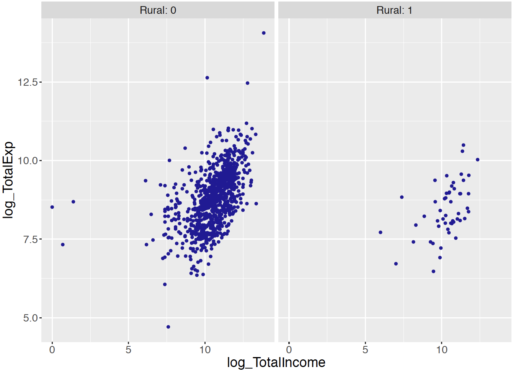
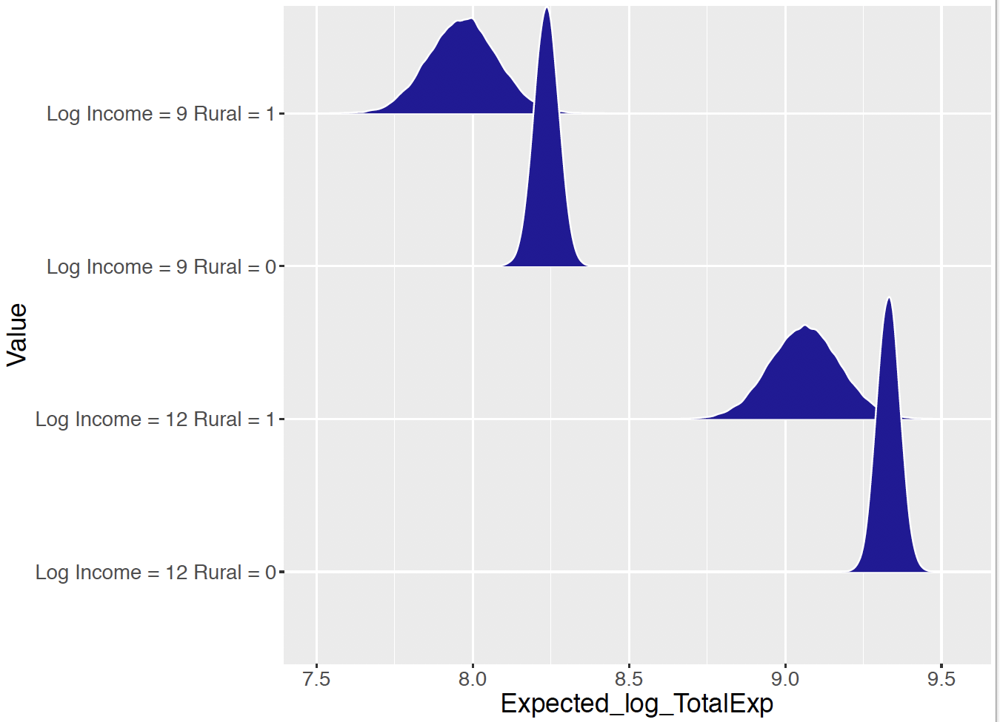
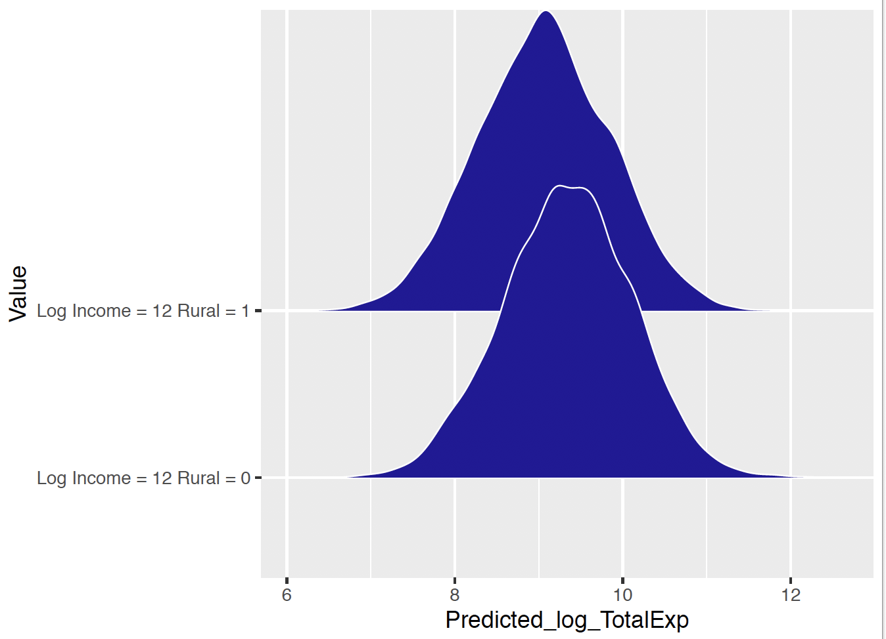
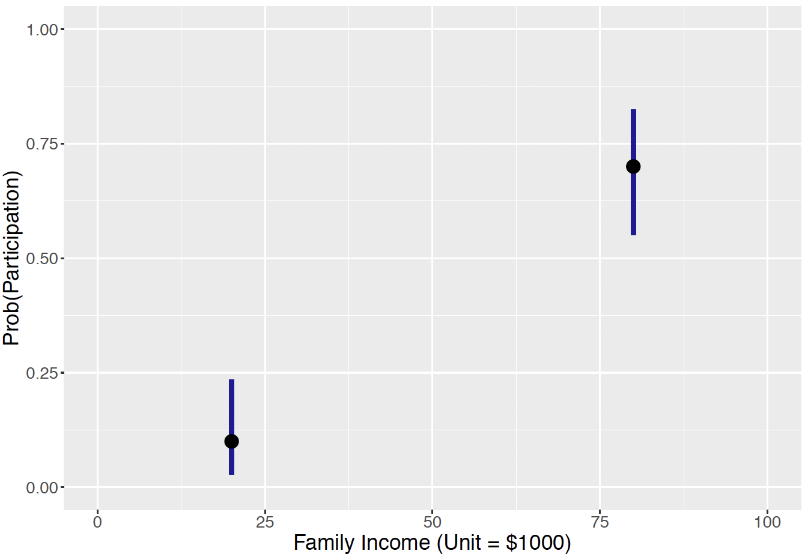
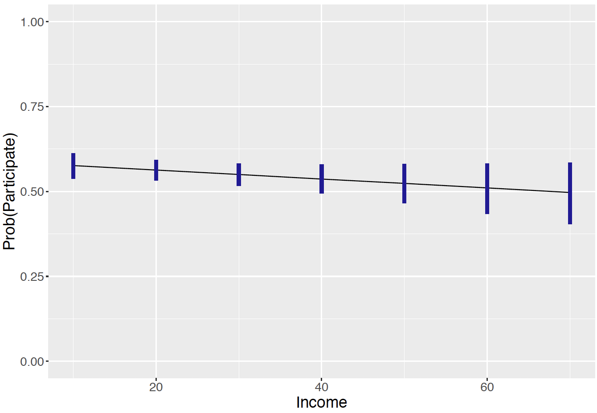

<!DOCTYPE html>
<html lang="" xml:lang="">
<head>

  <meta charset="utf-8" />
  <meta http-equiv="X-UA-Compatible" content="IE=edge" />
  <title>Chapter 12 Bayesian Multiple Regression and Logistic Models | Probability and Bayesian Modeling</title>
  <meta name="description" content="This is an introduction to probability and Bayesian modeling at the undergraduate level. It assumes the student has some background with calculus." />
  <meta name="generator" content="bookdown 0.20 and GitBook 2.6.7" />

  <meta property="og:title" content="Chapter 12 Bayesian Multiple Regression and Logistic Models | Probability and Bayesian Modeling" />
  <meta property="og:type" content="book" />
  
  
  <meta property="og:description" content="This is an introduction to probability and Bayesian modeling at the undergraduate level. It assumes the student has some background with calculus." />
  

  <meta name="twitter:card" content="summary" />
  <meta name="twitter:title" content="Chapter 12 Bayesian Multiple Regression and Logistic Models | Probability and Bayesian Modeling" />
  
  <meta name="twitter:description" content="This is an introduction to probability and Bayesian modeling at the undergraduate level. It assumes the student has some background with calculus." />
  

<meta name="author" content="Jim Albert and Jingchen Hu" />


<meta name="date" content="2020-07-30" />

  <meta name="viewport" content="width=device-width, initial-scale=1" />
  <meta name="apple-mobile-web-app-capable" content="yes" />
  <meta name="apple-mobile-web-app-status-bar-style" content="black" />
  
  
<link rel="prev" href="simple-linear-regression.html"/>
<link rel="next" href="case-studies.html"/>
<script src="libs/jquery-2.2.3/jquery.min.js"></script>
<link href="libs/gitbook-2.6.7/css/style.css" rel="stylesheet" />
<link href="libs/gitbook-2.6.7/css/plugin-table.css" rel="stylesheet" />
<link href="libs/gitbook-2.6.7/css/plugin-bookdown.css" rel="stylesheet" />
<link href="libs/gitbook-2.6.7/css/plugin-highlight.css" rel="stylesheet" />
<link href="libs/gitbook-2.6.7/css/plugin-search.css" rel="stylesheet" />
<link href="libs/gitbook-2.6.7/css/plugin-fontsettings.css" rel="stylesheet" />
<link href="libs/gitbook-2.6.7/css/plugin-clipboard.css" rel="stylesheet" />


<script src="libs/accessible-code-block-0.0.1/empty-anchor.js"></script>


<link rel="stylesheet" href="style.css" type="text/css" />
</head>

<body>


  <div class="book without-animation with-summary font-size-2 font-family-1" data-basepath=".">

    <div class="book-summary">
      <nav role="navigation">

<ul class="summary">
<li><a href="./">Probability and Bayesian Modeling</a></li>

<li class="divider"></li>
<li class="chapter" data-level="1" data-path="probability-a-measurement-of-uncertainty.html"><a href="probability-a-measurement-of-uncertainty.html"><i class="fa fa-check"></i><b>1</b> Probability: A Measurement of Uncertainty</a><ul>
<li class="chapter" data-level="1.1" data-path="probability-a-measurement-of-uncertainty.html"><a href="probability-a-measurement-of-uncertainty.html#introduction"><i class="fa fa-check"></i><b>1.1</b> Introduction</a></li>
<li class="chapter" data-level="1.2" data-path="probability-a-measurement-of-uncertainty.html"><a href="probability-a-measurement-of-uncertainty.html#the-classical-view-of-a-probability"><i class="fa fa-check"></i><b>1.2</b> The Classical View of a Probability</a></li>
<li class="chapter" data-level="1.3" data-path="probability-a-measurement-of-uncertainty.html"><a href="probability-a-measurement-of-uncertainty.html#the-frequency-view-of-a-probability"><i class="fa fa-check"></i><b>1.3</b> The Frequency View of a Probability</a></li>
<li class="chapter" data-level="1.4" data-path="probability-a-measurement-of-uncertainty.html"><a href="probability-a-measurement-of-uncertainty.html#the-subjective-view-of-a-probability"><i class="fa fa-check"></i><b>1.4</b> The Subjective View of a Probability</a></li>
<li class="chapter" data-level="1.5" data-path="probability-a-measurement-of-uncertainty.html"><a href="probability-a-measurement-of-uncertainty.html#the-sample-space"><i class="fa fa-check"></i><b>1.5</b> The Sample Space</a></li>
<li class="chapter" data-level="1.6" data-path="probability-a-measurement-of-uncertainty.html"><a href="probability-a-measurement-of-uncertainty.html#assigning-probabilities"><i class="fa fa-check"></i><b>1.6</b> Assigning Probabilities</a></li>
<li class="chapter" data-level="1.7" data-path="probability-a-measurement-of-uncertainty.html"><a href="probability-a-measurement-of-uncertainty.html#events-and-event-operations"><i class="fa fa-check"></i><b>1.7</b> Events and Event Operations</a></li>
<li class="chapter" data-level="1.8" data-path="probability-a-measurement-of-uncertainty.html"><a href="probability-a-measurement-of-uncertainty.html#the-three-probability-axioms"><i class="fa fa-check"></i><b>1.8</b> The Three Probability Axioms</a></li>
<li class="chapter" data-level="1.9" data-path="probability-a-measurement-of-uncertainty.html"><a href="probability-a-measurement-of-uncertainty.html#the-complement-and-addition-properties"><i class="fa fa-check"></i><b>1.9</b> The Complement and Addition Properties</a></li>
<li class="chapter" data-level="1.10" data-path="probability-a-measurement-of-uncertainty.html"><a href="probability-a-measurement-of-uncertainty.html#exercises"><i class="fa fa-check"></i><b>1.10</b> Exercises</a></li>
</ul></li>
<li class="chapter" data-level="2" data-path="counting-methods.html"><a href="counting-methods.html"><i class="fa fa-check"></i><b>2</b> Counting Methods</a><ul>
<li class="chapter" data-level="2.1" data-path="counting-methods.html"><a href="counting-methods.html#introduction-rolling-dice-yahtzee-and-roulette"><i class="fa fa-check"></i><b>2.1</b> Introduction: Rolling Dice, Yahtzee, and Roulette</a></li>
<li class="chapter" data-level="2.2" data-path="counting-methods.html"><a href="counting-methods.html#equally-likely-outcomes"><i class="fa fa-check"></i><b>2.2</b> Equally Likely Outcomes</a></li>
<li class="chapter" data-level="2.3" data-path="counting-methods.html"><a href="counting-methods.html#the-multiplication-counting-rule"><i class="fa fa-check"></i><b>2.3</b> The Multiplication Counting Rule</a></li>
<li class="chapter" data-level="2.4" data-path="counting-methods.html"><a href="counting-methods.html#permutations"><i class="fa fa-check"></i><b>2.4</b> Permutations</a></li>
<li class="chapter" data-level="2.5" data-path="counting-methods.html"><a href="counting-methods.html#combinations"><i class="fa fa-check"></i><b>2.5</b> Combinations</a><ul>
<li class="chapter" data-level="2.5.1" data-path="counting-methods.html"><a href="counting-methods.html#number-of-subsets"><i class="fa fa-check"></i><b>2.5.1</b> Number of subsets</a></li>
</ul></li>
<li class="chapter" data-level="2.6" data-path="counting-methods.html"><a href="counting-methods.html#arrangements-of-non-distinct-objects"><i class="fa fa-check"></i><b>2.6</b> Arrangements of Non-Distinct Objects</a></li>
<li class="chapter" data-level="2.7" data-path="counting-methods.html"><a href="counting-methods.html#playing-yahtzee"><i class="fa fa-check"></i><b>2.7</b> Playing Yahtzee</a></li>
<li class="chapter" data-level="2.8" data-path="counting-methods.html"><a href="counting-methods.html#exercises"><i class="fa fa-check"></i><b>2.8</b> Exercises</a></li>
</ul></li>
<li class="chapter" data-level="3" data-path="conditional-probability.html"><a href="conditional-probability.html"><i class="fa fa-check"></i><b>3</b> Conditional Probability</a><ul>
<li class="chapter" data-level="3.1" data-path="conditional-probability.html"><a href="conditional-probability.html#introduction-the-three-card-problem"><i class="fa fa-check"></i><b>3.1</b> Introduction: The Three Card Problem</a></li>
<li class="chapter" data-level="3.2" data-path="conditional-probability.html"><a href="conditional-probability.html#in-everyday-life"><i class="fa fa-check"></i><b>3.2</b> In Everyday Life</a></li>
<li class="chapter" data-level="3.3" data-path="conditional-probability.html"><a href="conditional-probability.html#in-a-two-way-table"><i class="fa fa-check"></i><b>3.3</b> In a Two-Way Table</a></li>
<li class="chapter" data-level="3.4" data-path="conditional-probability.html"><a href="conditional-probability.html#definition-and-the-multiplication-rule"><i class="fa fa-check"></i><b>3.4</b> Definition and the Multiplication Rule</a></li>
<li class="chapter" data-level="3.5" data-path="conditional-probability.html"><a href="conditional-probability.html#the-multiplication-rule-under-independence"><i class="fa fa-check"></i><b>3.5</b> The Multiplication Rule Under Independence</a></li>
<li class="chapter" data-level="3.6" data-path="conditional-probability.html"><a href="conditional-probability.html#learning-using-bayes-rule"><i class="fa fa-check"></i><b>3.6</b> Learning Using Bayes’ Rule</a></li>
<li class="chapter" data-level="3.7" data-path="conditional-probability.html"><a href="conditional-probability.html#r-example-learning-about-a-spinner"><i class="fa fa-check"></i><b>3.7</b> R Example: Learning About a Spinner</a></li>
<li class="chapter" data-level="3.8" data-path="conditional-probability.html"><a href="conditional-probability.html#exercises"><i class="fa fa-check"></i><b>3.8</b> Exercises</a></li>
</ul></li>
<li class="chapter" data-level="4" data-path="discrete-distributions.html"><a href="discrete-distributions.html"><i class="fa fa-check"></i><b>4</b> Discrete Distributions</a><ul>
<li class="chapter" data-level="4.1" data-path="discrete-distributions.html"><a href="discrete-distributions.html#introduction-the-hat-check-problem"><i class="fa fa-check"></i><b>4.1</b> Introduction: The Hat Check Problem</a></li>
<li class="chapter" data-level="4.2" data-path="discrete-distributions.html"><a href="discrete-distributions.html#random-variable-and-probability-distribution"><i class="fa fa-check"></i><b>4.2</b> Random Variable and Probability Distribution</a></li>
<li class="chapter" data-level="4.3" data-path="discrete-distributions.html"><a href="discrete-distributions.html#summarizing-a-probability-distribution"><i class="fa fa-check"></i><b>4.3</b> Summarizing a Probability Distribution</a></li>
<li class="chapter" data-level="4.4" data-path="discrete-distributions.html"><a href="discrete-distributions.html#standard-deviation-of-a-probability-distribution"><i class="fa fa-check"></i><b>4.4</b> Standard Deviation of a Probability Distribution</a></li>
<li class="chapter" data-level="4.5" data-path="discrete-distributions.html"><a href="discrete-distributions.html#coin-tossing-distributions"><i class="fa fa-check"></i><b>4.5</b> Coin-Tossing Distributions</a><ul>
<li class="chapter" data-level="4.5.1" data-path="discrete-distributions.html"><a href="discrete-distributions.html#binomial-probabilities"><i class="fa fa-check"></i><b>4.5.1</b> Binomial probabilities</a></li>
<li class="chapter" data-level="4.5.2" data-path="discrete-distributions.html"><a href="discrete-distributions.html#binomial-computations"><i class="fa fa-check"></i><b>4.5.2</b> Binomial computations</a></li>
<li class="chapter" data-level="4.5.3" data-path="discrete-distributions.html"><a href="discrete-distributions.html#mean-and-standard-deviation-of-a-binomial"><i class="fa fa-check"></i><b>4.5.3</b> Mean and standard deviation of a Binomial</a></li>
<li class="chapter" data-level="4.5.4" data-path="discrete-distributions.html"><a href="discrete-distributions.html#negative-binomial-experiments"><i class="fa fa-check"></i><b>4.5.4</b> Negative Binomial Experiments</a></li>
</ul></li>
<li class="chapter" data-level="4.6" data-path="discrete-distributions.html"><a href="discrete-distributions.html#exercises"><i class="fa fa-check"></i><b>4.6</b> Exercises</a></li>
</ul></li>
<li class="chapter" data-level="5" data-path="continuous-distributions.html"><a href="continuous-distributions.html"><i class="fa fa-check"></i><b>5</b> Continuous Distributions</a><ul>
<li class="chapter" data-level="5.1" data-path="continuous-distributions.html"><a href="continuous-distributions.html#introduction-a-baseball-spinner-game"><i class="fa fa-check"></i><b>5.1</b> Introduction: A Baseball Spinner Game</a></li>
<li class="chapter" data-level="5.2" data-path="continuous-distributions.html"><a href="continuous-distributions.html#the-uniform-distribution"><i class="fa fa-check"></i><b>5.2</b> The Uniform Distribution</a></li>
<li class="chapter" data-level="5.3" data-path="continuous-distributions.html"><a href="continuous-distributions.html#binomial-probabilities-and-the-normal-curve"><i class="fa fa-check"></i><b>5.3</b> Binomial Probabilities and the Normal Curve</a></li>
<li class="chapter" data-level="5.4" data-path="continuous-distributions.html"><a href="continuous-distributions.html#sampling-distribution-of-the-mean"><i class="fa fa-check"></i><b>5.4</b> Sampling Distribution of the Mean</a></li>
 <li class="chapter" data-level="5.5" data-path="continuous-distributions.html"><a href="continuous-distributions.html#exercises"><i class="fa fa-check"></i><b>5.5</b> Exercises</a></li>
</ul></li>
<li class="chapter" data-level="6" data-path="joint-probability-distributions.html"><a href="joint-probability-distributions.html"><i class="fa fa-check"></i><b>6</b> Joint Probability Distributions</a><ul>
<li class="chapter" data-level="6.1" data-path="probability-a-measurement-of-uncertainty.html"><a href="probability-a-measurement-of-uncertainty.html#introduction"><i class="fa fa-check"></i><b>6.1</b> Introduction</a></li>
<li class="chapter" data-level="6.2" data-path="joint-probability-distributions.html"><a href="joint-probability-distributions.html#joint-probability-mass-function-sampling-from-a-box"><i class="fa fa-check"></i><b>6.2</b> Joint Probability Mass Function: Sampling From a Box</a></li>
<li class="chapter" data-level="6.3" data-path="joint-probability-distributions.html"><a href="joint-probability-distributions.html#multinomial-experiments"><i class="fa fa-check"></i><b>6.3</b> Multinomial Experiments</a></li>
<li class="chapter" data-level="6.4" data-path="joint-probability-distributions.html"><a href="joint-probability-distributions.html#joint-density-functions"><i class="fa fa-check"></i><b>6.4</b> Joint Density Functions</a></li>
<li class="chapter" data-level="6.5" data-path="joint-probability-distributions.html"><a href="joint-probability-distributions.html#independence-and-measuring-association"><i class="fa fa-check"></i><b>6.5</b> Independence and Measuring Association</a></li>
<li class="chapter" data-level="6.6" data-path="joint-probability-distributions.html"><a href="joint-probability-distributions.html#flipping-a-random-coin-the-beta-binomial-distribution"><i class="fa fa-check"></i><b>6.6</b> Flipping a Random Coin: The Beta-Binomial Distribution</a></li>
<li class="chapter" data-level="6.7" data-path="joint-probability-distributions.html"><a href="joint-probability-distributions.html#bivariate-normal-distribution"><i class="fa fa-check"></i><b>6.7</b> Bivariate Normal Distribution</a></li>
<li class="chapter" data-level="6.8" data-path="joint-probability-distributions.html"><a href="joint-probability-distributions.html#exercises"><i class="fa fa-check"></i><b>6.8</b> Exercises</a></li>
</ul></li>
<li class="chapter" data-level="7" data-path="proportion.html"><a href="proportion.html"><i class="fa fa-check"></i><b>7</b> Learning About a Binomial Probability</a><ul>
<li class="chapter" data-level="7.1" data-path="proportion.html"><a href="proportion.html#introduction-thinking-about-a-proportion-subjectively"><i class="fa fa-check"></i><b>7.1</b> Introduction: Thinking About a Proportion Subjectively</a></li>
<li class="chapter" data-level="7.2" data-path="proportion.html"><a href="proportion.html#bayesian-inference-with-discrete-priors"><i class="fa fa-check"></i><b>7.2</b> Bayesian Inference with Discrete Priors</a><ul>
<li class="chapter" data-level="7.2.1" data-path="proportion.html"><a href="proportion.html#example-students-dining-preference"><i class="fa fa-check"></i><b>7.2.1</b> Example: students’ dining preference</a></li>
<li class="chapter" data-level="7.2.2" data-path="proportion.html"><a href="proportion.html#discrete-prior-distributions-for-proportion-p"><i class="fa fa-check"></i><b>7.2.2</b> Discrete prior distributions for proportion <span class="math inline">\(p\)</span></a></li>
<li class="chapter" data-level="7.2.3" data-path="proportion.html"><a href="proportion.html#likelihood"><i class="fa fa-check"></i><b>7.2.3</b> Likelihood</a></li>
<li class="chapter" data-level="7.2.4" data-path="proportion.html"><a href="proportion.html#posterior-distribution-for-proportion-p"><i class="fa fa-check"></i><b>7.2.4</b> Posterior distribution for proportion <span class="math inline">\(p\)</span></a></li>
<li class="chapter" data-level="7.2.5" data-path="proportion.html"><a href="proportion.html#inference-students-dining-preference"><i class="fa fa-check"></i><b>7.2.5</b> Inference: students’ dining preference</a></li>
<li class="chapter" data-level="7.2.6" data-path="proportion.html"><a href="proportion.html#discussion-using-a-discrete-prior"><i class="fa fa-check"></i><b>7.2.6</b> Discussion: using a discrete prior</a></li>
</ul></li>
<li class="chapter" data-level="7.3" data-path="proportion.html"><a href="proportion.html#continuous-priors"><i class="fa fa-check"></i><b>7.3</b> Continuous Priors</a><ul>
<li class="chapter" data-level="7.3.1" data-path="proportion.html"><a href="proportion.html#the-beta-distribution-and-probabilities"><i class="fa fa-check"></i><b>7.3.1</b> The Beta distribution and probabilities</a></li>
</ul></li>
<li class="chapter" data-level="7.4" data-path="proportion.html"><a href="proportion.html#updating-the-beta-prior"><i class="fa fa-check"></i><b>7.4</b> Updating the Beta Prior</a><ul>
<li class="chapter" data-level="7.4.1" data-path="proportion.html"><a href="proportion.html#bayes-rule-calculation"><i class="fa fa-check"></i><b>7.4.1</b> Bayes’ rule calculation</a></li>
<li class="chapter" data-level="7.4.2" data-path="proportion.html"><a href="proportion.html#from-beta-prior-to-beta-posterior"><i class="fa fa-check"></i><b>7.4.2</b> From Beta prior to Beta posterior</a></li>
</ul></li>
<li class="chapter" data-level="7.5" data-path="proportion.html"><a href="proportion.html#bayesian-inferences-with-continuous-priors"><i class="fa fa-check"></i><b>7.5</b> Bayesian Inferences with Continuous Priors</a><ul>
<li class="chapter" data-level="7.5.1" data-path="proportion.html"><a href="proportion.html#bayesian-hypothesis-testing"><i class="fa fa-check"></i><b>7.5.1</b> Bayesian hypothesis testing</a></li>
<li class="chapter" data-level="7.5.2" data-path="proportion.html"><a href="proportion.html#bayesian-credible-intervals"><i class="fa fa-check"></i><b>7.5.2</b> Bayesian credible intervals</a></li>
<li class="chapter" data-level="7.5.3" data-path="proportion.html"><a href="proportion.html#bayesian-prediction"><i class="fa fa-check"></i><b>7.5.3</b> Bayesian prediction</a></li>
</ul></li>
<li class="chapter" data-level="7.6" data-path="proportion.html"><a href="proportion.html#predictive-checking"><i class="fa fa-check"></i><b>7.6</b> Predictive Checking</a><ul>
<li class="chapter" data-level="7.6.1" data-path="proportion.html"><a href="proportion.html#comparing-bayesian-models"><i class="fa fa-check"></i><b>7.6.1</b> Comparing Bayesian models</a></li>
<li class="chapter" data-level="7.6.2" data-path="proportion.html"><a href="proportion.html#posterior-predictive-checking"><i class="fa fa-check"></i><b>7.6.2</b> Posterior predictive checking</a></li>
</ul></li>
<li class="chapter" data-level="7.7" data-path="proportion.html"><a href="proportion.html#exercises"><i class="fa fa-check"></i><b>7.7</b> Exercises</a></li>
</ul></li>
<li class="chapter" data-level="8" data-path="mean.html"><a href="mean.html"><i class="fa fa-check"></i><b>8</b> Modeling Measurement and Count Data</a><ul>
<li class="chapter" data-level="8.1" data-path="mean.html"><a href="mean.html#introduction"><i class="fa fa-check"></i><b>8.1</b> Introduction</a></li>
<li class="chapter" data-level="8.2" data-path="mean.html"><a href="mean.html#modeling-measurements"><i class="fa fa-check"></i><b>8.2</b> Modeling Measurements</a><ul>
<li class="chapter" data-level="8.2.1" data-path="mean.html"><a href="mean.html#examples"><i class="fa fa-check"></i><b>8.2.1</b> Examples</a></li>
<li class="chapter" data-level="8.2.2" data-path="mean.html"><a href="mean.html#the-general-approach"><i class="fa fa-check"></i><b>8.2.2</b> The general approach</a></li>
<li class="chapter" data-level="8.2.3" data-path="mean.html"><a href="mean.html#outline-of-chapter"><i class="fa fa-check"></i><b>8.2.3</b> Outline of chapter</a></li>
</ul></li>
<li class="chapter" data-level="8.3" data-path="mean.html"><a href="mean.html#Normal:Discrete"><i class="fa fa-check"></i><b>8.3</b> Bayesian Inference with Discrete Priors</a><ul>
<li class="chapter" data-level="8.3.1" data-path="mean.html"><a href="mean.html#Normal:Discrete:Roger"><i class="fa fa-check"></i><b>8.3.1</b> Example: Roger Federer’s time-to-serve</a></li>
<li class="chapter" data-level="8.3.2" data-path="mean.html"><a href="mean.html#Normal:SamplingModel:derivation"><i class="fa fa-check"></i><b>8.3.2</b> Simplification of the likelihood</a></li>
<li class="chapter" data-level="8.3.3" data-path="mean.html"><a href="mean.html#Normal:SamplingModel:inference"><i class="fa fa-check"></i><b>8.3.3</b> Inference: Federer’s time-to-serve</a></li>
</ul></li>
<li class="chapter" data-level="8.4" data-path="mean.html"><a href="mean.html#Normal:Continuous"><i class="fa fa-check"></i><b>8.4</b> Continuous Priors</a><ul>
<li class="chapter" data-level="8.4.1" data-path="mean.html"><a href="mean.html#Normal:Continuous:prior"><i class="fa fa-check"></i><b>8.4.1</b> The Normal prior for mean <span class="math inline">\(\mu\)</span></a></li>
<li class="chapter" data-level="8.4.2" data-path="mean.html"><a href="mean.html#Normal:Continuous:choosing"><i class="fa fa-check"></i><b>8.4.2</b> Choosing a Normal prior</a></li>
</ul></li>
<li class="chapter" data-level="8.5" data-path="mean.html"><a href="mean.html#Normal:ContinuousUpdate"><i class="fa fa-check"></i><b>8.5</b> Updating the Normal Prior</a><ul>
<li class="chapter" data-level="8.5.1" data-path="mean.html"><a href="mean.html#introduction-1"><i class="fa fa-check"></i><b>8.5.1</b> Introduction</a></li>
<li class="chapter" data-level="8.5.2" data-path="mean.html"><a href="mean.html#Normal:ContinuousUpdate:Overview"><i class="fa fa-check"></i><b>8.5.2</b> A quick peak at the update procedure</a></li>
<li class="chapter" data-level="8.5.3" data-path="mean.html"><a href="mean.html#Normal:ContinuousUpdate:BayesRule"><i class="fa fa-check"></i><b>8.5.3</b> Bayes’ rule calculation</a></li>
<li class="chapter" data-level="8.5.4" data-path="mean.html"><a href="mean.html#Normal:ContinuousUpdate:Conjugate"><i class="fa fa-check"></i><b>8.5.4</b> Conjugate Normal prior</a></li>
</ul></li>
<li class="chapter" data-level="8.6" data-path="mean.html"><a href="mean.html#Normal:ContinuousInference"><i class="fa fa-check"></i><b>8.6</b> Bayesian Inferences for Continuous Normal Mean</a><ul>
<li class="chapter" data-level="8.6.1" data-path="mean.html"><a href="mean.html#Normal:ContinuousInference:HTandCI"><i class="fa fa-check"></i><b>8.6.1</b> Bayesian hypothesis testing and credible interval</a></li>
<li class="chapter" data-level="8.6.2" data-path="mean.html"><a href="mean.html#Normal:ContinuousInference:Prediction"><i class="fa fa-check"></i><b>8.6.2</b> Bayesian prediction</a></li>
</ul></li>
<li class="chapter" data-level="8.7" data-path="mean.html"><a href="mean.html#Normal:PPC"><i class="fa fa-check"></i><b>8.7</b> Posterior Predictive Checking</a></li>
<li class="chapter" data-level="8.8" data-path="mean.html"><a href="mean.html#modeling-count-data"><i class="fa fa-check"></i><b>8.8</b> Modeling Count Data</a><ul>
<li class="chapter" data-level="8.8.1" data-path="mean.html"><a href="mean.html#examples-1"><i class="fa fa-check"></i><b>8.8.1</b> Examples</a></li>
<li class="chapter" data-level="8.8.2" data-path="mean.html"><a href="mean.html#the-poisson-distribution"><i class="fa fa-check"></i><b>8.8.2</b> The Poisson distribution</a></li>
<li class="chapter" data-level="8.8.3" data-path="mean.html"><a href="mean.html#bayesian-inferences"><i class="fa fa-check"></i><b>8.8.3</b> Bayesian inferences</a></li>
<li class="chapter" data-level="8.8.4" data-path="mean.html"><a href="mean.html#case-study-learning-about-website-counts"><i class="fa fa-check"></i><b>8.8.4</b> Case study: Learning about website counts</a></li>
</ul></li>
<li class="chapter" data-level="8.9" data-path="mean.html"><a href="mean.html#exercises"><i class="fa fa-check"></i><b>8.9</b> Exercises</a></li>
</ul></li>
<li class="chapter" data-level="9" data-path="simulation-by-markov-chain-monte-carlo.html"><a href="simulation-by-markov-chain-monte-carlo.html"><i class="fa fa-check"></i><b>9</b> Simulation by Markov Chain Monte Carlo</a><ul>
<li class="chapter" data-level="9.1" data-path="simulation-by-markov-chain-monte-carlo.html"><a href="simulation-by-markov-chain-monte-carlo.html#introduction"><i class="fa fa-check"></i><b>9.1</b> Introduction</a><ul>
<li class="chapter" data-level="9.1.1" data-path="simulation-by-markov-chain-monte-carlo.html"><a href="simulation-by-markov-chain-monte-carlo.html#the-bayesian-computation-problem"><i class="fa fa-check"></i><b>9.1.1</b> The Bayesian computation problem</a></li>
<li class="chapter" data-level="9.1.2" data-path="simulation-by-markov-chain-monte-carlo.html"><a href="simulation-by-markov-chain-monte-carlo.html#choosing-a-prior"><i class="fa fa-check"></i><b>9.1.2</b> Choosing a prior</a></li>
<li class="chapter" data-level="9.1.3" data-path="simulation-by-markov-chain-monte-carlo.html"><a href="simulation-by-markov-chain-monte-carlo.html#the-two-parameter-normal-problem"><i class="fa fa-check"></i><b>9.1.3</b> The two-parameter Normal problem</a></li>
<li class="chapter" data-level="9.1.4" data-path="simulation-by-markov-chain-monte-carlo.html"><a href="simulation-by-markov-chain-monte-carlo.html#overview-of-the-chapter"><i class="fa fa-check"></i><b>9.1.4</b> Overview of the chapter</a></li>
</ul></li>
<li class="chapter" data-level="9.2" data-path="simulation-by-markov-chain-monte-carlo.html"><a href="simulation-by-markov-chain-monte-carlo.html#markov-chains"><i class="fa fa-check"></i><b>9.2</b> Markov Chains</a><ul>
<li class="chapter" data-level="9.2.1" data-path="simulation-by-markov-chain-monte-carlo.html"><a href="simulation-by-markov-chain-monte-carlo.html#definition"><i class="fa fa-check"></i><b>9.2.1</b> Definition</a></li>
<li class="chapter" data-level="9.2.2" data-path="simulation-by-markov-chain-monte-carlo.html"><a href="simulation-by-markov-chain-monte-carlo.html#some-properties"><i class="fa fa-check"></i><b>9.2.2</b> Some properties</a></li>
<li class="chapter" data-level="9.2.3" data-path="simulation-by-markov-chain-monte-carlo.html"><a href="simulation-by-markov-chain-monte-carlo.html#simulating-a-markov-chain"><i class="fa fa-check"></i><b>9.2.3</b> Simulating a Markov chain</a></li>
</ul></li>
<li class="chapter" data-level="9.3" data-path="simulation-by-markov-chain-monte-carlo.html"><a href="simulation-by-markov-chain-monte-carlo.html#the-metropolis-algorithm"><i class="fa fa-check"></i><b>9.3</b> The Metropolis Algorithm</a><ul>
<li class="chapter" data-level="9.3.1" data-path="simulation-by-markov-chain-monte-carlo.html"><a href="simulation-by-markov-chain-monte-carlo.html#example-walking-on-a-number-line"><i class="fa fa-check"></i><b>9.3.1</b> Example: Walking on a number line</a></li>
<li class="chapter" data-level="9.3.2" data-path="simulation-by-markov-chain-monte-carlo.html"><a href="simulation-by-markov-chain-monte-carlo.html#the-general-algorithm"><i class="fa fa-check"></i><b>9.3.2</b> The general algorithm</a></li>
<li class="chapter" data-level="9.3.3" data-path="simulation-by-markov-chain-monte-carlo.html"><a href="simulation-by-markov-chain-monte-carlo.html#a-general-function-for-the-metropolis-algorithm"><i class="fa fa-check"></i><b>9.3.3</b> A general function for the Metropolis algorithm</a></li>
</ul></li>
<li class="chapter" data-level="9.4" data-path="simulation-by-markov-chain-monte-carlo.html"><a href="simulation-by-markov-chain-monte-carlo.html#example-cauchy-normal-problem"><i class="fa fa-check"></i><b>9.4</b> Example: Cauchy-Normal problem</a><ul>
<li class="chapter" data-level="9.4.1" data-path="simulation-by-markov-chain-monte-carlo.html"><a href="simulation-by-markov-chain-monte-carlo.html#choice-of-starting-value-and-proposal-region"><i class="fa fa-check"></i><b>9.4.1</b> Choice of starting value and proposal region</a></li>
<li class="chapter" data-level="9.4.2" data-path="simulation-by-markov-chain-monte-carlo.html"><a href="simulation-by-markov-chain-monte-carlo.html#collecting-the-simulated-draws"><i class="fa fa-check"></i><b>9.4.2</b> Collecting the simulated draws</a></li>
</ul></li>
<li class="chapter" data-level="9.5" data-path="simulation-by-markov-chain-monte-carlo.html"><a href="simulation-by-markov-chain-monte-carlo.html#gibbs-sampling"><i class="fa fa-check"></i><b>9.5</b> Gibbs Sampling</a><ul>
<li class="chapter" data-level="9.5.1" data-path="simulation-by-markov-chain-monte-carlo.html"><a href="simulation-by-markov-chain-monte-carlo.html#bivariate-discrete-distribution"><i class="fa fa-check"></i><b>9.5.1</b> Bivariate discrete distribution}</a></li>
<li class="chapter" data-level="9.5.2" data-path="simulation-by-markov-chain-monte-carlo.html"><a href="simulation-by-markov-chain-monte-carlo.html#beta-binomial-sampling"><i class="fa fa-check"></i><b>9.5.2</b> Beta-binomial sampling</a></li>
<li class="chapter" data-level="9.5.3" data-path="simulation-by-markov-chain-monte-carlo.html"><a href="simulation-by-markov-chain-monte-carlo.html#normal-sampling-both-parameters-unknown"><i class="fa fa-check"></i><b>9.5.3</b> Normal sampling – both parameters unknown</a></li>
</ul></li>
<li class="chapter" data-level="9.6" data-path="simulation-by-markov-chain-monte-carlo.html"><a href="simulation-by-markov-chain-monte-carlo.html#mcmc-inputs-and-diagnostics"><i class="fa fa-check"></i><b>9.6</b> MCMC Inputs and Diagnostics</a><ul>
<li class="chapter" data-level="9.6.1" data-path="simulation-by-markov-chain-monte-carlo.html"><a href="simulation-by-markov-chain-monte-carlo.html#burn-in-starting-values-and-multiple-chains"><i class="fa fa-check"></i><b>9.6.1</b> Burn-in, starting values, and multiple chains</a></li>
<li class="chapter" data-level="9.6.2" data-path="simulation-by-markov-chain-monte-carlo.html"><a href="simulation-by-markov-chain-monte-carlo.html#diagnostics"><i class="fa fa-check"></i><b>9.6.2</b> Diagnostics</a></li>
<li class="chapter" data-level="9.6.3" data-path="simulation-by-markov-chain-monte-carlo.html"><a href="simulation-by-markov-chain-monte-carlo.html#graphs-and-summaries"><i class="fa fa-check"></i><b>9.6.3</b> Graphs and summaries</a></li>
</ul></li>
<li class="chapter" data-level="9.7" data-path="simulation-by-markov-chain-monte-carlo.html"><a href="simulation-by-markov-chain-monte-carlo.html#using-jags"><i class="fa fa-check"></i><b>9.7</b> Using JAGS</a><ul>
<li class="chapter" data-level="9.7.1" data-path="simulation-by-markov-chain-monte-carlo.html"><a href="simulation-by-markov-chain-monte-carlo.html#normal-sampling-model"><i class="fa fa-check"></i><b>9.7.1</b> Normal sampling model</a></li>
<li class="chapter" data-level="9.7.2" data-path="simulation-by-markov-chain-monte-carlo.html"><a href="simulation-by-markov-chain-monte-carlo.html#multiple-chains"><i class="fa fa-check"></i><b>9.7.2</b> Multiple chains</a></li>
<li class="chapter" data-level="9.7.3" data-path="proportion.html"><a href="proportion.html#posterior-predictive-checking"><i class="fa fa-check"></i><b>9.7.3</b> Posterior predictive checking</a></li>
<li class="chapter" data-level="9.7.4" data-path="simulation-by-markov-chain-monte-carlo.html"><a href="simulation-by-markov-chain-monte-carlo.html#comparing-two-proportions"><i class="fa fa-check"></i><b>9.7.4</b> Comparing two proportions</a></li>
</ul></li>
<li class="chapter" data-level="9.8" data-path="simulation-by-markov-chain-monte-carlo.html"><a href="simulation-by-markov-chain-monte-carlo.html#exercises"><i class="fa fa-check"></i><b>9.8</b> Exercises</a></li>
</ul></li>
<li class="chapter" data-level="10" data-path="bayesian-hierarchical-modeling.html"><a href="bayesian-hierarchical-modeling.html"><i class="fa fa-check"></i><b>10</b> Bayesian Hierarchical Modeling</a><ul>
<li class="chapter" data-level="10.1" data-path="bayesian-hierarchical-modeling.html"><a href="bayesian-hierarchical-modeling.html#introduction"><i class="fa fa-check"></i><b>10.1</b> Introduction</a><ul>
<li class="chapter" data-level="10.1.1" data-path="bayesian-hierarchical-modeling.html"><a href="bayesian-hierarchical-modeling.html#observations-in-groups"><i class="fa fa-check"></i><b>10.1.1</b> Observations in groups</a></li>
<li class="chapter" data-level="10.1.2" data-path="bayesian-hierarchical-modeling.html"><a href="bayesian-hierarchical-modeling.html#example-standardized-test-scores"><i class="fa fa-check"></i><b>10.1.2</b> Example: standardized test scores</a></li>
<li class="chapter" data-level="10.1.3" data-path="bayesian-hierarchical-modeling.html"><a href="bayesian-hierarchical-modeling.html#separate-estimates"><i class="fa fa-check"></i><b>10.1.3</b> Separate estimates?</a></li>
<li class="chapter" data-level="10.1.4" data-path="bayesian-hierarchical-modeling.html"><a href="bayesian-hierarchical-modeling.html#combined-estimates"><i class="fa fa-check"></i><b>10.1.4</b> Combined estimates?</a></li>
<li class="chapter" data-level="10.1.5" data-path="bayesian-hierarchical-modeling.html"><a href="bayesian-hierarchical-modeling.html#a-two-stage-prior-leading-to-compromise-estimates"><i class="fa fa-check"></i><b>10.1.5</b> A two-stage prior leading to compromise estimates</a></li>
</ul></li>
<li class="chapter" data-level="10.2" data-path="bayesian-hierarchical-modeling.html"><a href="bayesian-hierarchical-modeling.html#hierarchical-normal-modeling"><i class="fa fa-check"></i><b>10.2</b> Hierarchical Normal Modeling</a><ul>
<li class="chapter" data-level="10.2.1" data-path="bayesian-hierarchical-modeling.html"><a href="bayesian-hierarchical-modeling.html#example-ratings-of-animation-movies"><i class="fa fa-check"></i><b>10.2.1</b> Example: ratings of animation movies</a></li>
<li class="chapter" data-level="10.2.2" data-path="bayesian-hierarchical-modeling.html"><a href="bayesian-hierarchical-modeling.html#a-hierarchical-normal-model-with-random-sigma"><i class="fa fa-check"></i><b>10.2.2</b> A hierarchical Normal model with random <span class="math inline">\(\sigma\)</span></a></li>
<li class="chapter" data-level="10.2.3" data-path="bayesian-hierarchical-modeling.html"><a href="bayesian-hierarchical-modeling.html#inference-through-mcmc"><i class="fa fa-check"></i><b>10.2.3</b> Inference through MCMC</a></li>
</ul></li>
<li class="chapter" data-level="10.3" data-path="bayesian-hierarchical-modeling.html"><a href="bayesian-hierarchical-modeling.html#hierarchical-beta-binomial-modeling"><i class="fa fa-check"></i><b>10.3</b> Hierarchical Beta-Binomial Modeling</a><ul>
<li class="chapter" data-level="10.3.1" data-path="bayesian-hierarchical-modeling.html"><a href="bayesian-hierarchical-modeling.html#example-deaths-after-heart-attack"><i class="fa fa-check"></i><b>10.3.1</b> Example: Deaths after heart attack</a></li>
<li class="chapter" data-level="10.3.2" data-path="bayesian-hierarchical-modeling.html"><a href="bayesian-hierarchical-modeling.html#a-hierarchical-beta-binomial-model"><i class="fa fa-check"></i><b>10.3.2</b> A hierarchical Beta-Binomial model</a></li>
<li class="chapter" data-level="10.3.3" data-path="bayesian-hierarchical-modeling.html"><a href="bayesian-hierarchical-modeling.html#inference-through-mcmc-1"><i class="fa fa-check"></i><b>10.3.3</b> Inference through MCMC</a></li>
</ul></li>
<li class="chapter" data-level="10.4" data-path="bayesian-hierarchical-modeling.html"><a href="bayesian-hierarchical-modeling.html#exercises"><i class="fa fa-check"></i><b>10.4</b> Exercises</a></li>
</ul></li>
<li class="chapter" data-level="11" data-path="simple-linear-regression.html"><a href="simple-linear-regression.html"><i class="fa fa-check"></i><b>11</b> Simple Linear Regression</a><ul>
<li class="chapter" data-level="11.1" data-path="psimple-linear-regression.html"><a href="simple-linear-regression.html#introduction"><i class="fa fa-check"></i><b>11.1</b> Introduction</a></li>
<li class="chapter" data-level="11.2" data-path="simple-linear-regression.html"><a href="simple-linear-regression.html#example-prices-and-areas-of-house-sales"><i class="fa fa-check"></i><b>11.2</b> Example: Prices and Areas of House Sales</a></li>
<li class="chapter" data-level="11.3" data-path="simple-linear-regression.html"><a href="simple-linear-regression.html#a-simple-linear-regression-model"><i class="fa fa-check"></i><b>11.3</b> A Simple Linear Regression Model</a></li>
<li class="chapter" data-level="11.4" data-path="simple-linear-regression.html"><a href="simple-linear-regression.html#a-weakly-informative-prior"><i class="fa fa-check"></i><b>11.4</b> A Weakly Informative Prior</a></li>
<li class="chapter" data-level="11.5" data-path="simple-linear-regression.html"><a href="simple-linear-regression.html#posterior-analysis"><i class="fa fa-check"></i><b>11.5</b> Posterior Analysis</a></li>
<li class="chapter" data-level="11.6" data-path="bayesian-hierarchical-modeling.html"><a href="bayesian-hierarchical-modeling.html#inference-through-mcmc"><i class="fa fa-check"></i><b>11.6</b> Inference through MCMC</a></li>
<li class="chapter" data-level="11.7" data-path="simple-linear-regression.html"><a href="simple-linear-regression.html#bayesian-inferences-with-simple-linear-regression"><i class="fa fa-check"></i><b>11.7</b> Bayesian Inferences with Simple Linear Regression</a><ul>
<li class="chapter" data-level="11.7.1" data-path="simple-linear-regression.html"><a href="simple-linear-regression.html#simulate-fits-from-the-regression-model"><i class="fa fa-check"></i><b>11.7.1</b> Simulate fits from the regression model</a></li>
<li class="chapter" data-level="11.7.2" data-path="simple-linear-regression.html"><a href="simple-linear-regression.html#learning-about-the-expected-response"><i class="fa fa-check"></i><b>11.7.2</b> Learning about the expected response</a></li>
<li class="chapter" data-level="11.7.3" data-path="simple-linear-regression.html"><a href="simple-linear-regression.html#prediction-of-future-response"><i class="fa fa-check"></i><b>11.7.3</b> Prediction of future response</a></li>
<li class="chapter" data-level="11.7.4" data-path="simple-linear-regression.html"><a href="simple-linear-regression.html#posterior-predictive-model-checking"><i class="fa fa-check"></i><b>11.7.4</b> Posterior predictive model checking</a></li>
</ul></li>
<li class="chapter" data-level="11.8" data-path="mean.html"><a href="mean.html#informative-prior"><i class="fa fa-check"></i><b>11.8</b> Informative Prior</a><ul>
<li class="chapter" data-level="11.8.1" data-path="simple-linear-regression.html"><a href="simple-linear-regression.html#standardization"><i class="fa fa-check"></i><b>11.8.1</b> Standardization</a></li>
<li class="chapter" data-level="11.8.2" data-path="simple-linear-regression.html"><a href="simple-linear-regression.html#prior-distributions"><i class="fa fa-check"></i><b>11.8.2</b> Prior distributions</a></li>
<li class="chapter" data-level="11.8.3" data-path="simple-linear-regression.html"><a href="simple-linear-regression.html#posterior-analysis-1"><i class="fa fa-check"></i><b>11.8.3</b> Posterior Analysis</a></li>
</ul></li>
<li class="chapter" data-level="11.9" data-path="simple-linear-regression.html"><a href="simple-linear-regression.html#a-conditional-means-prior"><i class="fa fa-check"></i><b>11.9</b> A Conditional Means Prior</a></li>
<li class="chapter" data-level="11.10" data-path="psimple-linear-regression.html"><a href="simple-linear-regression.html#exercises"><i class="fa fa-check"></i><b>11.10</b> Exercises</a></li>
</ul></li>
<li class="chapter" data-level="12" data-path="bayesian-multiple-regression-and-logistic-models.html"><a href="bayesian-multiple-regression-and-logistic-models.html"><i class="fa fa-check"></i><b>12</b> Bayesian Multiple Regression and Logistic Models</a><ul>
<li class="chapter" data-level="12.1" data-path="bayesian-multiple-regression-and-logistic-models.html"><a href="bayesian-multiple-regression-and-logistic-modelsy.html#introduction"><i class="fa fa-check"></i><b>12.1</b> Introduction</a></li>
<li class="chapter" data-level="12.2" data-path="bayesian-multiple-regression-and-logistic-models.html"><a href="bayesian-multiple-regression-and-logistic-models.html#bayesian-multiple-linear-regression"><i class="fa fa-check"></i><b>12.2</b> Bayesian Multiple Linear Regression</a><ul>
<li class="chapter" data-level="12.2.1" data-path="bayesian-multiple-regression-and-logistic-models.html"><a href="bayesian-multiple-regression-and-logistic-models.html#example-expenditures-of-u.s.-households"><i class="fa fa-check"></i><b>12.2.1</b> Example: expenditures of U.S. households</a></li>
<li class="chapter" data-level="12.2.2" data-path="bayesian-multiple-regression-and-logistic-models.html"><a href="bayesian-multiple-regression-and-logistic-models.html#a-multiple-linear-regression-model"><i class="fa fa-check"></i><b>12.2.2</b> A multiple linear regression model</a></li>
<li class="chapter" data-level="12.2.3" data-path="bayesian-multiple-regression-and-logistic-models.html"><a href="bayesian-multiple-regression-and-logistic-models.html#weakly-informative-priors-and-inference-through-mcmc"><i class="fa fa-check"></i><b>12.2.3</b> Weakly informative priors and inference through MCMC</a></li>
<li class="chapter" data-level="12.2.4" data-path="bayesian-multiple-regression-and-logistic-models.html"><a href="bayesian-multiple-regression-and-logistic-models.html#prediction"><i class="fa fa-check"></i><b>12.2.4</b> Prediction</a></li>
</ul></li>
<li class="chapter" data-level="12.3" data-path="bayesian-multiple-regression-and-logistic-models.html"><a href="bayesian-multiple-regression-and-logistic-models.html#comparing-regression-models"><i class="fa fa-check"></i><b>12.3</b> Comparing Regression Models</a></li>
<li class="chapter" data-level="12.4" data-path="bayesian-multiple-regression-and-logistic-models.html"><a href="bayesian-multiple-regression-and-logistic-models.html#bayesian-logistic-regression"><i class="fa fa-check"></i><b>12.4</b> Bayesian Logistic Regression </a><ul>
<li class="chapter" data-level="12.4.1" data-path="bayesian-multiple-regression-and-logistic-models.html"><a href="bayesian-multiple-regression-and-logistic-models.html#example-u.s.-women-labor-participation"><i class="fa fa-check"></i><b>12.4.1</b> Example: U.S. women labor participation</a></li>
<li class="chapter" data-level="12.4.2" data-path="bayesian-multiple-regression-and-logistic-models.html"><a href="bayesian-multiple-regression-and-logistic-models.html#a-logistic-regression-model"><i class="fa fa-check"></i><b>12.4.2</b> A logistic regression model</a></li>
<li class="chapter" data-level="12.4.3" data-path="bayesian-multiple-regression-and-logistic-models.html"><a href="bayesian-multiple-regression-and-logistic-models.html#conditional-means-priors-and-inference-through-mcmc"><i class="fa fa-check"></i><b>12.4.3</b> Conditional means priors and inference through MCMC</a></li>
<li class="chapter" data-level="12.4.4" data-path="bayesian-multiple-regression-and-logistic-models.html"><a href="bayesian-multiple-regression-and-logistic-models.html#prediction-1"><i class="fa fa-check"></i><b>12.4.4</b> Prediction</a></li>
</ul></li>
<li class="chapter" data-level="12.5" data-path="bayesian-multiple-regression-and-logistic-models.html"><a href="bayesian-multiple-regression-and-logistic-models.html#exercises"><i class="fa fa-check"></i><b>12.5</b> Exercises</a></li>
</ul></li>
<li class="chapter" data-level="13" data-path="case-studies.html"><a href="case-studies.html"><i class="fa fa-check"></i><b>13</b> Case Studies</a><ul>
<li class="chapter" data-level="13.1" data-path="case-studies.html"><a href="case-studies.html#introduction"><i class="fa fa-check"></i><b>13.1</b> Introduction</a></li>
<li class="chapter" data-level="13.2" data-path="case-studies.html"><a href="case-studies.html#federalist-papers-study"><i class="fa fa-check"></i><b>13.2</b> Federalist Papers Study</a><ul>
<li class="chapter" data-level="13.2.1" data-path="mean.html"><a href="mean.html#introduction-1"><i class="fa fa-check"></i><b>13.2.1</b> Introduction</a></li>
<li class="chapter" data-level="13.2.2" data-path="case-studies.html"><a href="case-studies.html#data-on-word-use"><i class="fa fa-check"></i><b>13.2.2</b> Data on word use</a></li>
<li class="chapter" data-level="13.2.3" data-path="case-studies.html"><a href="case-studies.html#poisson-density-sampling"><i class="fa fa-check"></i><b>13.2.3</b> Poisson density sampling</a></li>
<li class="chapter" data-level="13.2.4" data-path="case-studies.html"><a href="case-studies.html#negative-binomial-sampling"><i class="fa fa-check"></i><b>13.2.4</b> Negative Binomial sampling</a></li>
<li class="chapter" data-level="13.2.5" data-path="case-studies.html"><a href="case-studies.html#comparison-of-rates-for-two-authors"><i class="fa fa-check"></i><b>13.2.5</b> Comparison of rates for two authors</a></li>
<li class="chapter" data-level="13.2.6" data-path="case-studies.html"><a href="case-studies.html#which-words-distinguish-the-two-authors"><i class="fa fa-check"></i><b>13.2.6</b> Which words distinguish the two authors?</a></li>
</ul></li>
<li class="chapter" data-level="13.3" data-path="case-studies.html"><a href="case-studies.html#career-trajectories"><i class="fa fa-check"></i><b>13.3</b> Career Trajectories</a><ul>
<li class="chapter" data-level="13.3.1" data-path="case-studies.html"><a href="case-studies.html#introduction-2"><i class="fa fa-check"></i><b>13.3.1</b> Introduction</a></li>
<li class="chapter" data-level="13.3.2" data-path="case-studies.html"><a href="case-studies.html#measuring-hitting-performance-in-baseball"><i class="fa fa-check"></i><b>13.3.2</b> Measuring hitting performance in baseball</a></li>
<li class="chapter" data-level="13.3.3" data-path="case-studies.html"><a href="case-studies.html#a-hitters-career-trajectory"><i class="fa fa-check"></i><b>13.3.3</b> A hitter’s career trajectory</a></li>
<li class="chapter" data-level="13.3.4" data-path="case-studies.html"><a href="case-studies.html#estimating-a-single-trajectory"><i class="fa fa-check"></i><b>13.3.4</b> Estimating a single trajectory</a></li>
<li class="chapter" data-level="13.3.5" data-path="case-studies.html"><a href="case-studies.html#estimating-many-trajectories-by-a-hierarchical-model"><i class="fa fa-check"></i><b>13.3.5</b> Estimating many trajectories by a hierarchical model</a></li>
</ul></li>
<li class="chapter" data-level="13.4" data-path="case-studies.html"><a href="case-studies.html#latent-class-modeling"><i class="fa fa-check"></i><b>13.4</b> Latent Class Modeling</a><ul>
<li class="chapter" data-level="13.4.1" data-path="case-studies.html"><a href="case-studies.html#two-classes-of-test-takers"><i class="fa fa-check"></i><b>13.4.1</b> Two classes of test takers</a></li>
<li class="chapter" data-level="13.4.2" data-path="case-studies.html"><a href="case-studies.html#a-latent-class-model-with-two-classes"><i class="fa fa-check"></i><b>13.4.2</b> A latent class model with two classes</a></li>
<li class="chapter" data-level="13.4.3" data-path="case-studies.html"><a href="case-studies.html#disputed-authorship-of-the-federalist-papers"><i class="fa fa-check"></i><b>13.4.3</b> Disputed authorship of the Federalist Papers</a></li>
</ul></li>
<li class="chapter" data-level="13.5" data-path="case-studies.html"><a href="case-studies.html#exercises"><i class="fa fa-check"></i><b>13.5</b> Exercises</a></li>
</ul></li>
<li class="divider"></li>
<li><a href="https://github.com/rstudio/bookdown" target="blank">Published with bookdown</a></li>

</ul>

      </nav>
    </div>

    <div class="book-body">
      <div class="body-inner">
        <div class="book-header" role="navigation">
          <h1>
            <i class="fa fa-circle-o-notch fa-spin"></i><a href="./">Probability and Bayesian Modeling</a>
          </h1>
        </div>

        <div class="page-wrapper" tabindex="-1" role="main">
          <div class="page-inner">

            <section class="normal" id="section-">
<div id="bayesian-multiple-regression-and-logistic-models" class="section level1">
<h1><span class="header-section-number">Chapter 12</span> Bayesian Multiple Regression and Logistic Models</h1>
<div id="introduction" class="section level2">
<h2><span class="header-section-number">12.1</span> Introduction</h2>
<p>In Chapter 11, we introduced simple linear regression where the mean of a continuous response variable was represented as a linear function of a single predictor variable.
In this chapter, this regression scenario is generalized in several ways. In Section 12.2, the multiple regression setting is considered where the mean of a continuous response is written as a function of several predictor variables. Methodology for comparing different regression models is described in Section 12.2. The second generalization considers the case where the response variable is binary with two possible responses in Section 12.3. Here one is interested in modeling the probability of a particular response as a function of an predictor variable. Although these situations are more sophisticated, the Bayesian methodology for inference and prediction follows the general approach described in the previous chapters.</p>
</div>
<div id="bayesian-multiple-linear-regression" class="section level2">
<h2><span class="header-section-number">12.2</span> Bayesian Multiple Linear Regression</h2>
<div id="example-expenditures-of-u.s.-households" class="section level3">
<h3><span class="header-section-number">12.2.1</span> Example: expenditures of U.S. households</h3>
<p>The U.S. Bureau of Labor Statistics (BLS) conducts the Consumer Expenditure Surveys (CE) through which the BLS collects data on expenditures, income, and tax statistics about households across the United States. Specifically, this survey provides information on the buying habits of U.S. consumers. The summary, domain-level statistics published by the CE are used for both policy-making and research, including the most widely used measure of inflation, the Consumer Price Index (CPI). In addition, the CE has measurements of poverty that determine thresholds for the U.S. Government’s Supplemental Poverty Measure.</p>
<p>The CE consists of two surveys. The Quarterly Interview Survey, taken each quarter, aims to capture large purchases (such as rent, utilities, and vehicles), containing approximately 7000 interviews. The Diary Survey, administrated on an annual basis, focuses on capturing small purchases (such as food, beverages, tobacco), containing approximately 14,000 interviews of households.</p>
<p>The CE publishes public-use microdata (PUMD), and a sample of the Quarterly Interview Survey in 2017 1st quarter is collected from the PUMD. This sample contains 1000 consumer units (CU), and provides information of the CU’s total expenditures in last quarter, the amount of CU income before taxes in past 12 months, and the CU’s urban/rural status. Table 12.1 provides the description of each variable in the CE sample.</p>
<p>Table 12.1. The variable description for the CE sample.</p>
<table>
<thead>
<tr class="header">
<th align="left">Variable</th>
<th align="left">Description</th>
</tr>
</thead>
<tbody>
<tr class="odd">
<td align="left">Expenditure</td>
<td align="left">Continuous; CU’s total expenditures in last quarter</td>
</tr>
<tr class="even">
<td align="left">Income</td>
<td align="left">Continuous; the amount of CU income before taxes in</td>
</tr>
<tr class="odd">
<td align="left"></td>
<td align="left">past 12 months</td>
</tr>
<tr class="even">
<td align="left">UrbanRural</td>
<td align="left">Binary; the urban/rural status of CU: 1 = Urban,</td>
</tr>
<tr class="odd">
<td align="left"></td>
<td align="left">2 = Rural</td>
</tr>
</tbody>
</table>
<p>Suppose someone is interested in predicting a CU’s expenditure from its urban/rural status and its income before taxes. In this example, one is treating expenditure as the response variable and the other two variables as predictors.
To proceed, one needs to develop a model to express the relationship between expenditure and the other two predictors <strong>jointly</strong>. This requires extending the simple linear regression model introduced in Chapter 11 to the case with multiple predictors. This extension is known as multiple linear regression – the word multiple indicates two or more predictors are present in the regression model. This section describes how to set up a multiple linear regression model, how to specify prior distributions for regression coefficients of multiple predictors, and how to make Bayesian inferences and predictions in this setting.</p>
<p>Recall in Chapter 11, the mean response <span class="math inline">\(\mu_i\)</span> was expressed as a linear function of the single continuous predictor <span class="math inline">\(x_i\)</span> depending on an intercept parameter <span class="math inline">\(\beta_0\)</span> and a slope parameter <span class="math inline">\(\beta_1\)</span>:</p>
<p><span class="math display">\[\begin{equation*}
\mu_i = \beta_0 + \beta_1 x_i.
\end{equation*}\]</span></p>
<p>In particular, the slope parameter <span class="math inline">\(\beta_1\)</span> is interpreted as the change in the expected response <span class="math inline">\(\mu_i\)</span>, when the predictor <span class="math inline">\(x_i\)</span> of record <span class="math inline">\(i\)</span> increases by a single unit. In the household expenditures example, not only there are multiple predictors, but the predictors are of different types including one continuous predictor (income), and one binary categorical (rural/urban status) predictor. As Chapter 11 focused on continuous-valued predictors, the interpretation of a regression coefficient for a binary categorical predictor is an important topic for discussion in this section.</p>
</div>
<div id="a-multiple-linear-regression-model" class="section level3">
<h3><span class="header-section-number">12.2.2</span> A multiple linear regression model</h3>
<p>Similar to a simple linear regression model, a multiple linear regression model assumes a observation specific mean <span class="math inline">\(\mu_i\)</span> for the <span class="math inline">\(i\)</span>-th response variable <span class="math inline">\(Y_i\)</span>.
<span class="math display" id="eq:normalsampling">\[\begin{equation}
Y_i \mid \mu_i, \sigma \overset{ind}{\sim} \textrm{Normal}(\mu_i, \sigma), \, \, i = 1, \cdots, n.
\tag{12.1}
\end{equation}\]</span>
In addition, it assumes that the mean of <span class="math inline">\(Y_i\)</span>, <span class="math inline">\(\mu_i\)</span>, is a linear function of all predictors. In general, one writes
<span class="math display" id="eq:lincomp">\[\begin{equation}
\mu_i = \beta_0 + \beta_1 x_{i,1} + \beta_2 x_{i,2} + \cdots + \beta_r x_{i,r},
\tag{12.2}
\end{equation}\]</span>
where <span class="math inline">\(\mathbf{x}_i = (x_{i,1}, x_{i,2}, \cdots, x_{i,r})\)</span> is a vector of <span class="math inline">\(r\)</span> known predictors for observation <span class="math inline">\(i\)</span>, and <span class="math inline">\(\mathbf{\beta} = (\beta_0, \beta_1, \cdots, \beta_r)\)</span> is a vector of unknown regression parameters (coefficients), shared among all observations.</p>
<p>For studies where all <span class="math inline">\(r\)</span> predictors are continuous, one interprets the intercept parameter <span class="math inline">\(\beta_0\)</span> as the expected response <span class="math inline">\(\mu_i\)</span> for observation <span class="math inline">\(i\)</span>, where all of its predictors take values of 0 (i.e. <span class="math inline">\(x_{i,1} = x_{i,2} = \cdots = x_{i,r} = 0\)</span>). One can also interpret the slope parameter <span class="math inline">\(\beta_i\)</span> (<span class="math inline">\(j = 1, 2, \cdots, r\)</span>) as the change in the expected response <span class="math inline">\(\mu_i\)</span>, when the <span class="math inline">\(j\)</span>-th predictor, <span class="math inline">\(x_{i,j}\)</span>, of observation <span class="math inline">\(i\)</span> increases by a single unit while all remaining <span class="math inline">\((r-1)\)</span> predictors stay constant.</p>
<p>However in the household expenditures example from the CE data sample, not all predictors are continuous. The urban/rural status variable is a binary categorical variable, taking a value of 1 if the CU is in an urban area, and taking value of 2 if the CU is in a rural area.
It is possible to consider the variable as continuous and interpret the associated regression coefficient as the change in the expected response <span class="math inline">\(\mu_i\)</span> when the CU’s urban/rural status changes by one unit from urban to rural (corresponding to change from one to two). But it is much more common to consider this variable as a binary categorical variable that classifies the observations into two distinct groups: the urban group and the rural group. It will be seen that this classification puts an emphasis on the difference of the expected responses between the two distinct groups.</p>
<p>Consequently, consider the construction of a new indicator variable in place of the binary variable. This new indicator variable takes a value of 0 if the CU is in an urban area, and a value of 1 if the CU is in a rural area. To understand the implication of this indictor variable, it is helpful to consider a simplified regression model with a single predictor, the binary indicator for rural area <span class="math inline">\(x_i\)</span>. This simple linear regression model expresses the linear relationship as
<span class="math display" id="eq:singlepredictor">\[\begin{equation}
\mu_i = \beta_0 + \beta_1 x_i  = 
 \begin{cases}
  \beta_0, &amp; \text{ the urban group}; \\
  \beta_0 + \beta_1, &amp; \text{ the rural group}.  \\
  \end{cases}
  \tag{12.3}
\end{equation}\]</span>
The expected response <span class="math inline">\(\mu_i\)</span> for CUs in the urban group is given by <span class="math inline">\(\beta_0\)</span>, and the expected response <span class="math inline">\(\mu_i\)</span> for CUs in the rural group is <span class="math inline">\(\beta_0 + \beta_1\)</span>. In this case <span class="math inline">\(\beta_1\)</span> represents the change in the expected response <span class="math inline">\(\mu_i\)</span> from the urban group to the rural group. That is, <span class="math inline">\(\beta_1\)</span> represents the effect of being a member of the rural group.</p>
<p>Before continuing, there is a need for some data transformation. Both the expenditure and income variables are highly skewed, and both variables have more even distributions if we apply logarithm transformations. So the response variable will be the logarithm of the CU’s total expenditure and the continuous predictor will be the logarithm of the CU 12-month income.
Figure 12.1 displays scatterplots of log income and log expenditure where the two panels correspond to urban and rural residents. Note that in each panel there appears to be a positive association between log income and log expenditure.</p>

<div class="figure"><span id="fig:unnamed-chunk-1"></span>

<p class="caption">
Figure 12.1: Scatterplot of log total income and log total expenditure for the urban and rural groups.
</p>
</div>
<p>Now that the data transformations are completed, one is ready to set up a multiple linear regression model for the log expenditure response including one continuous predictor and one binary categorical predictor. The expected response <span class="math inline">\(\mu_i\)</span> is expressed as a linear combination of the log income variable and the rural indicator variable.
<span class="math display" id="eq:normalsamp2">\[\begin{eqnarray}
\mu_i = \beta_0 &amp;+&amp; \beta_1 x_{i, income} + \beta_2 x_{i, rural}.
\tag{12.4}
\end{eqnarray}\]</span>
The multiple linear regression model is written as
<span class="math display" id="eq:linearreg">\[\begin{eqnarray}
Y_i \mid \beta_0, \beta_1, \beta_2, \sigma \overset{ind}{\sim} \textrm{Normal}(\beta_0 &amp;+&amp; \beta_1 x_{i, income} + \beta_2 x_{i, rural}, \sigma), \nonumber \\
\tag{12.5}
\end{eqnarray}\]</span>
where <span class="math inline">\(\mathbf{x}_i = (x_{i, income}, x_{i, rural})\)</span> is a vector of predictors and <span class="math inline">\(\sigma\)</span> is the standard deviation in the Normal model shared among all responses <span class="math inline">\(Y_i\)</span>’s.</p>
<p>The regression parameters have clear interpretations.
The intercept parameter <span class="math inline">\(\beta_0\)</span> is the expected log expenditure when both the remaining variables are 0’s: <span class="math inline">\(x_{i, income} = x_{i, rural} = 0\)</span>.
This intercept represents the mean log expenditure for an urban CU with a log income of 0.</p>
<p>The regression slope coefficient <span class="math inline">\(\beta_1\)</span> is associated with the continuous predictor variable, log income. This slope <span class="math inline">\(\beta_1\)</span> can be interpreted as the change in the expected log expenditure when the predictor log income of record <span class="math inline">\(i\)</span> increases by one unit, while all other predictors stay unchanged.</p>
<p>The remaining regression coefficient <span class="math inline">\(\beta_2\)</span> represents the change in the expected log expenditure compared relative to the expected log expenditure of the associated reference category, while all other predictors stay unchanged. In other words, <span class="math inline">\(\beta_2\)</span> is the change in the expected log expenditure of a rural CU comparing to an urban CU, when the two CUs have the same log income.</p>
<p>With an understanding of the meaning of the regression coefficients, one can now proceed to a description of a prior and MCMC algorithm of this multiple linear regression model. Note that one needs to construct a prior distribution for the set of parameters <span class="math inline">\((\beta_0, \beta_1, \beta_2, \sigma)\)</span>. We begin by describing the weakly informative prior approach and the subsequent MCMC inference.</p>
</div>
<div id="weakly-informative-priors-and-inference-through-mcmc" class="section level3">
<h3><span class="header-section-number">12.2.3</span> Weakly informative priors and inference through MCMC</h3>
<p>In situations where the data analyst has limited prior information about the regression parameters or the standard deviation, it is desirable to assign a prior that has little impact on the posterior. Similar to the weakly informative prior for simple linear regression described in Chapter 11, one assigns a weakly informative prior for a multiple linear regression model using standard functional forms. Assuming independence, the prior density for the set of parameters <span class="math inline">\((\beta_0, \beta_1, \beta_2, \sigma)\)</span> is written as a product of the component densities:</p>
<p><span class="math display">\[\begin{equation*}
\pi(\beta_0, \beta_1, \beta_2, \sigma) = \pi(\beta_0) \pi(\beta_1) \pi(\beta_2) \pi(\sigma),
\end{equation*}\]</span>
where <span class="math inline">\(\beta_0\)</span> is <span class="math inline">\(\textrm{Normal}(m_0, s_0)\)</span>, <span class="math inline">\(\beta_1\)</span> is <span class="math inline">\(\textrm{Normal}(m_1, s_1)\)</span>, <span class="math inline">\(\beta_2\)</span> is <span class="math inline">\(\textrm{Normal}(m_2, s_2)\)</span>, and the precision parameter <span class="math inline">\(\phi = 1/\sigma^2\)</span>, the inverse of the variance <span class="math inline">\(\sigma^2\)</span>, is <span class="math inline">\(\textrm{Gamma}(a, b)\)</span>.</p>
<p>If one has little information about the location of the regression parameters <span class="math inline">\(\beta_0\)</span>, <span class="math inline">\(\beta_1\)</span>, and <span class="math inline">\(\beta_2\)</span>, one assigns the respective prior means to be 0 and the prior standard deviations to be large values, say 20. In similar fashion, if little knowledge exists about the location of the sampling standard deviation <span class="math inline">\(\sigma\)</span>, one assigns small values for the hyperparameters, <span class="math inline">\(a\)</span> and <span class="math inline">\(b\)</span>, say <span class="math inline">\(a = b = 0.001\)</span>, for the Gamma prior placed on the precision <span class="math inline">\(\phi = 1/\sigma^2\)</span>.</p>
<p>One uses the JAGS software to draw MCMC samples from this multiple linear regression model. The process of using JAGS mimics the general approach used in earlier chapters.</p>
<p><strong>Describe the model by a script</strong></p>

<p> The first step in using JAGS writes the following script defining the multiple linear regression model, saving the script in the character string "modelString".</p>
<pre><code>modelString &lt;-&quot;
model {
## sampling
for (i in 1:N){
   y[i] ~ dnorm(beta0 + beta1*x_income[i] +
              beta2*x_rural[i], invsigma2)
}
## priors
beta0 ~ dnorm(mu0, g0)
beta1 ~ dnorm(mu1, g1)
beta2 ~ dnorm(mu2, g2)
invsigma2 ~ dgamma(a, b)
sigma &lt;- sqrt(pow(invsigma2, -1))
}
&quot;</code></pre>
<p>In the sampling section of the script, the iterative loop goes from <code>1</code> to <code>N</code>, where <code>N</code> is the number of observations with index <code>i</code>. Recall that the Normal distribution <code>dnorm</code> in JAGS is stated in terms of the mean and the precision and the variable <code>invsigma2</code> corresponds to the Normal sampling precision. The variable <code>sigma</code> is defined in the prior section of the script so one can track the simulated values of the standard deviation <span class="math inline">\(\sigma\)</span>.
Also the variables <code>m0</code>, <code>m1</code>, <code>m2</code> correspond to the means, and <code>g0</code>, <code>g1</code>, <code>g2</code> correspond to the precisions of the Normal prior densities for the three regression parameters.</p>
<p><strong>Define the data and prior parameters</strong></p>
<p>The next step is to provide the observed data and the values for the prior parameters. In the R script below, a list <code>the_data</code> contains the vector of log expenditures, the vector of log incomes, the indicator variables for the categories of the binary categorical variable, and the number of observations. This list also contains the means and precisions of the Normal priors for <code>beta0</code> through <code>beta2</code> and the values of the two parameters <code>a</code> and <code>b</code> of the Gamma prior for <code>invsigma2</code>. The prior mean of the Normal priors on the individual regression coefficients is 0, for <code>mu0</code> through <code>mu2</code>. The prior standard deviations of the Normal priors on the individual regression coefficients are 20, and so the corresponding precision values are <span class="math inline">\(1/20^2 = 0.0025\)</span> for <code>g0</code> through <code>g2</code>.</p>
<pre><code>y &lt;- as.vector(CEsample$log_TotalExp)
x_income &lt;- as.vector(CEsample$log_TotalIncome)
x_rural &lt;- as.vector(CEsample$Rural)
N &lt;- length(y)
the_data &lt;- list(&quot;y&quot; = y, &quot;x_income&quot; = x_income,
                 &quot;x_rural&quot; = x_rural, &quot;N&quot; = N,
                 &quot;mu0&quot; = 0, &quot;g0&quot; = 0.0025,
                 &quot;mu1&quot; = 0, &quot;g1&quot; = 0.0025,
                 &quot;mu2&quot; = 0, &quot;g2&quot; = 0.0025,
                 &quot;a&quot; = 0.001, &quot;b&quot; = 0.001)</code></pre>
<p><strong>Generate samples from the posterior distribution</strong></p>
<p>The <code>run.jags()</code> function in the <code>runjags</code> package generates posterior samples by the MCMC algorithm using the JAGS software. The script below runs one MCMC chain with an adaption period of 1000 iterations, a burn-in period of 5000 iterations, and an additional set of 20,000 iterations to be run and collected for inference. By using the argument <code>monitor = c("beta0", "beta1", "beta2", "sigma")</code>, one keeps tracks of all four model parameters. The output variable <code>posterior</code> contains a matrix of simulated draws.</p>
<pre><code>posterior &lt;- run.jags(modelString,
                      n.chains = 1,
                      data = the_data,
                      monitor = c(&quot;beta0&quot;, &quot;beta1&quot;,
                                  &quot;beta2&quot;, &quot;sigma&quot;),
                      adapt = 1000,
                      burnin = 5000,
                      sample = 20000)</code></pre>
<p><strong>MCMC diagnostics</strong></p>
<p>To obtain valid inferences from the posterior draws from the MCMC simulation, one should assess convergence of the MCMC chain. The <code>plot()</code> function with the argument input <code>vars</code> returns four diagnostic plots (trace plot, empirical CDF, histogram and autocorrelation plot) for the specified parameter. For example, Figure 12.2 shows the diagnostic plots for the slope parameter <span class="math inline">\(\beta_1\)</span> for the log income predictor using the following code.</p>
<pre><code>plot(posterior, vars = &quot;beta1&quot;)</code></pre>

<div class="figure"><span id="fig:unnamed-chunk-2"></span>

<p class="caption">
Figure 12.2: MCMC diagnostics plots for the regression slope parameter <span class="math inline">\(eta_1\)</span> for the log income predictor.
</p>
</div>
<p>The upper left trace plot shows MCMC mixing for the 20,000 simulated draws of <span class="math inline">\(\beta_1\)</span>. In this example, the lower right autocorrelation plot indicates relatively large correlation values between adjacent posterior draws of <span class="math inline">\(\beta_1\)</span>. In this particular example, since the mixing was not great, it was decided to take a larger sample of 20,000 draws to get good estimates of the posterior distribution. In usual practice, one should perform these diagnostics for all parameters in the model.</p>
<p><strong>Summarization of the posterior</strong></p>
<p>Posterior summaries of the parameters are obtained by use of the print(posterior, digits = 3) command. Note that these summaries are based on the 20,000 iterations from the sampling period excluding the samples from the adaption and burn-in periods.</p>
<pre><code>print(posterior, digits = 3)
      Lower95 Median Upper95   Mean     SD Mode    MCerr 
beta0    4.59   4.95    5.36   4.95  0.201   --   0.0166  
beta1   0.328  0.365     0.4  0.365 0.0188   --  0.00155    
beta2  -0.482 -0.267 -0.0476 -0.269  0.112   --  0.00112    
sigma   0.735  0.769   0.802  0.769 0.0172   -- 0.000172    
</code></pre>
<p>One way to determine if the two variables are useful predictors is to inspect the location of the 90% probability intervals. The interval estimate for <span class="math inline">\(\beta_1\)</span> (corresponding to log income) is (0.328, 0.400) and the corresponding estimate for <span class="math inline">\(\beta_2\)</span> (corresponding to the rural variable ) is (<span class="math inline">\(-0.482, -0.048\)</span>). Since both intervals do not cover zero, this indicates that both log income and the rural variables are helpful in predicting log expenditure.</p>
<p>Several types of summaries of the posterior distribution are illustrated. Suppose one is interested in learning about the expected log expenditure. From the regression model, the mean log expenditure is equal to
<span class="math display" id="eq:meanexpend1">\[\begin{equation}
 \beta_0 + \beta_1 x_{income}
 \tag{12.6}
\end{equation}\]</span>
for urban CUs, and equal to
<span class="math display" id="eq:meanexpend2">\[\begin{equation}
 \beta_0 + \beta_1 x_{income} + \beta_2
 \tag{12.7}
 \end{equation}\]</span>
for rural CUs. Figure 12.3 displays simulated draws from the posterior of the expected log expenditure superposed over the scatterplots of log income and log expenditure for the urban and rural cases. Note that there is more variation in the posterior draws for the rural units – this is reasonable since only a small portion of the data came from rural units.</p>
<div class="figure"><span id="fig:unnamed-chunk-3"></span>

<p class="caption">
Figure 12.3: Scatterplot of log income and log expenditure for the urban and rural groups. The superposed lines represent draws from the posterior distribution of the expected response.
</p>
</div>

<p>Figure 12.4 displays the posterior density of the mean log expenditure for the predictor pairs (log Income = 9, Rural = 1), (log Income = 9, Rural = 0), (log Income = 12, Rural = 1), and (log Income = 12, Rural = 0). It is pretty clear from this graph that log income is the more important predictor. For both urban and rural CUs, the log total expenditure is much larger for log income = 12 than for log income = 9. Given a particular value of log expenditure, the log expenditure is slightly higher for urban (Rural = 0) compared to rural units.</p>

<div class="figure"><span id="fig:unnamed-chunk-4"></span>

<p class="caption">
Figure 12.4: Posterior distributions of the expected log expenditure for units with different income and rural variables.
</p>
</div>
</div>
<div id="prediction" class="section level3">
<h3><span class="header-section-number">12.2.4</span> Prediction</h3>
<p>A related problem is to predict a CU’s log expenditure for a particular set of predictor values. Let <span class="math inline">\(\tilde{Y}\)</span> denote the future response value for the expenditure for given values of income <span class="math inline">\(x^*_{income}\)</span> and rural value <span class="math inline">\(x^*_{rural}\)</span>. One represents the posterior predictive density of <span class="math inline">\(\tilde{Y}\)</span> as
<span class="math display" id="eq:prediction1">\[\begin{equation}
f(\tilde{Y} = \tilde{y} \mid y) = \int f(\tilde{y} \mid y, \beta, \sigma) \pi(\beta, \sigma   \mid  y) d\beta,
\tag{12.8}
\end{equation}\]</span>
where <span class="math inline">\(\pi(\beta, \sigma | y)\)</span> is the posterior density and <span class="math inline">\(f(\tilde{Y} = \tilde{y} \mid y, \beta, \sigma)\)</span> is the Normal sampling density which depends on the predictor values.</p>

<p><strong>R Work</strong> Since we have already produced simulated draws from the posterior distribution, it is straightforward to simulate from the posterior predictive distribution. One simulates a single draw from <span class="math inline">\(f(\tilde{Y} = \tilde{y} \mid y)\)</span> by first simulating a value of <span class="math inline">\(({\mathbf{\beta}}, \sigma)\)</span> from the posterior – call this draw <span class="math inline">\((\beta^{(s)}, \sigma^{(s)})\)</span>. Then one simulates a draw of <span class="math inline">\(\tilde{Y}\)</span> from a Normal density with mean <span class="math inline">\(\beta_0^{(s)} + \beta_1^{(s)} x^*_{income} + \beta_2^{(s)} x^*_{rural}\)</span> and standard deviation <span class="math inline">\(\sigma^{(s)}\)</span>. By repeating this process for a large number of iterations, the function <code>one_predicted()</code> simulates a sample from the posterior prediction distribution for particular predictor values <span class="math inline">\(x^*_{income}\)</span> and <span class="math inline">\(x^*_{rural}\)</span>.</p>
<pre><code>one_predicted &lt;- function(x1, x2){
  lp &lt;- post[ , &quot;beta0&quot;] +  x1 * post[ , &quot;beta1&quot;] +
    x2 * post[, &quot;beta2&quot;]
  y &lt;- rnorm(5000, lp, post[, &quot;sigma&quot;])
  data.frame(Value = paste(&quot;Log Income =&quot;, x1,
                           &quot;Rural =&quot;, x2),
             Predicted_log_TotalExp = y)
}
df &lt;- map2_df(c(12, 12),
              c(0, 1), one_predicted)</code></pre>
<p>This procedure is implemented for the two sets of predictor values (log income, rural) = (12, 1) and (log income, rural) = (12, 0). Figure 12.5 displays density estimates of the posterior predictive distributions for the two cases. Comparing Figures 12.4 and 12.5, note the increased width of the prediction densities relative to the expected response densities. One confirms this by computing interval estimates. For example, for the values (log income, rural) = (12, 1), a 90% interval for the expected log expenditure is (8.88, 9.25) and the 90% interval for the predicted log expenditure for the same predictor values is (7.81, 10.34).</p>

<div class="figure"><span id="fig:unnamed-chunk-5"></span>

<p class="caption">
Figure 12.5: Predictive distributions of the log expenditure for units with different income and rural variables.
</p>
</div>
</div>
</div>
<div id="comparing-regression-models" class="section level2">
<h2><span class="header-section-number">12.3</span> Comparing Regression Models</h2>
<p>When one fits a multiple regression model, there is a list of inputs, i.e. potential predictor variables, and there are many possible regression models to fit depending on what inputs are included in the model. In the household expenditures example, there are two possible inputs, the log total income and the rural/urban status and there are 2 x 2 = 4 possible models depending on the inclusion or exclusion of each input. When there are many inputs, the number of possible regression models can be quite large and so there needs to be some method for choosing the “best” regression model. A simple example to used to describe what is meant by a best model and then a general method is outlined for selecting between models.</p>
<p><strong>Learning about a career trajectory</strong></p>
<p>To discuss model selection in a simple context, consider a baseball modeling problem that will be more thoroughly discussed in Chapter 13. One is interested in seeing how a professional athlete ages during his or her career. In many sports, an athletic enters his/her professional career at a modest level of performance, gets better until a particular age when peak performance is achieved, and then decreases in the level of performance until retirement. One can use a regression model to explore the pattern of performance over age – this pattern is typically called the athletic’s career trajectory.</p>
<p>We focus on a particular great historical baseball player Mike Schmidt who played in Major League Baseball from 1972 through 1989. Figure 12.6 first displays a scatterplot of the rate that Schmidt hit home runs as a function of his age. If <span class="math inline">\(y_i\)</span> denotes Schmidt’s home run rate during the <span class="math inline">\(i\)</span>-th season when his age was <span class="math inline">\(x_i\)</span>, Figure 12.6 further overlays fits from the following three career trajectory models:</p>
<ul>
<li>Model 1 - <strong>Linear</strong>:
<span class="math display">\[\begin{equation*}
Y_i \mid \beta_0, \beta_1, x_i, \sigma \sim \textrm{Normal}(\beta_0 + \beta_1 (x_i - 30), \sigma).
\end{equation*}\]</span></li>
<li>Model 2 - <strong>Quadratic</strong>:
<span class="math display">\[\begin{equation*}
Y_i \mid \beta_0, \beta_1, \beta_2, x_i, \sigma \sim \textrm{Normal}(\beta_0 + \beta_1 (x_i - 30) + \beta_2 (x_i - 30)^2, \sigma).
\end{equation*}\]</span></li>
<li>Model 3 - <strong>Cubic</strong>:</li>
</ul>
<p><span class="math display">\[
Y_i \mid \beta_0, \beta_1, \beta_2, \beta_3, x_i, \sigma \sim \textrm{Normal}(\beta_0 + \beta_1 (x_i - 30)+ \beta_2 (x_i - 30)^2
 + \beta_3 (x_i - 30)^3,  \sigma).
 \]</span></p>

<div class="figure"><span id="fig:unnamed-chunk-6"></span>

<p class="caption">
Figure 12.6: Scatterplot of age and home run rate for Mike Schmidt. Fits from linear, quadratic, and cubic models are overlaid.
</p>
</div>
<p>Model 1 says that Schmidt’s true home run performance is a linear function of his age, Model 2 says that his home run performance follows a parabolic shape, and Model 3 indicates that his performance follows a cubic curve. Based on the earlier comments about the knowledge of shapes of career trajectories, the linear function of age given in Model 1 does not appear suitable in reflecting the "down, up, down" trend that we see in the scatterplot. The fits of Models 2 and 3 appear to be similar in appearance, but there are differences in the interpretation of the fits. The quadratic fit (Model 2) indicates that Schmidt’s peak performance occurs about the age of 30 while the cubic fit (Model 3) indicates that his peak performance occurs around the age of 33. How can we choose between the two models?</p>
<p><strong>Underfitting and overfitting</strong></p>
<p>In model building, there are two ways of misspecifying a model that we call “underfitting” and “overfitting” that is described in the context of this career trajectory example. First, it is important that the model includes all inputs is helpful in explaining the variation in the response variable. Failure to include relevant inputs in the model will result in underfitting. In our example, age is the predictor variable and the possible inputs are age, age<span class="math inline">\(^2\)</span>, and age<span class="math inline">\(^3\)</span>. If we use Model 1 which includes only the input age, this particular model appears to underfit the data since this model does not reflect the increasing and decreasing pattern in the home run rates that we see in Figure 12.6.</p>
<p>At the other extreme, one should be careful not to include too many inputs in the model. When one includes more inputs in our regression model than needed, one has overfitting. Model 3 possibly overfits the data, since it may not be necessary to represent a player’s trajectory by a cubic curve – perhaps a quadratic curve is sufficient. In an extreme situation, by increasing the degree of the polynomial function of age, one can find a fitted curve that goes through most of the points in the scatterplot. This would be a severe case of overfitting since it is unlikely that a player’s true career trajectory is represented by a polynomial of a high degree.</p>
<p><strong>Cross-validation</strong></p>
<p>How does one choose a suitable regression model that avoids the underfitting and overfitting problems described above? A general method of comparing models is called cross-validation. In this method, one partitions the dataset into two parts – the “training” and “testing” components. One initially fits each regression model to the training dataset. Then one uses each fitted model to predict the response variable in the testing dataset. The model that is better in predicting observations in the future testing dataset is the preferred model.</p>
<p>Let’s describe how one implements cross-validation for our career trajectory example. In the example, Mike Schmidt had a total of 8170 at-bats for 13 seasons. One randomly divides these 8170 at-bats into two datasets – 4085 of the at-bats (and the associated home run and age variables) are placed in a training dataset and the remaining at-bats become the testing dataset. Let <span class="math inline">\(\{(x_i^{(1)}, y_i^{(1)})\}\)</span> denote the age and home run rate variables from the training dataset and <span class="math inline">\(\{(x_i^{(2)}, y_i^{(2)})\}\)</span> denote the corresponding variables from the testing dataset.</p>
<p>Suppose one considers the use of Model 1 where the home run rate <span class="math inline">\(Y_i^{(1)} \sim \textrm{Normal}(\mu_i, \sigma)\)</span> where the mean rate is <span class="math inline">\(\mu_i = \beta_0 + (\beta_1 - 30) x_i^{(1)}\)</span>. One places a weakly informative prior on the vector of parameters <span class="math inline">\((\beta_0, \beta_1, \sigma)\)</span> and define the likelihood using the training data. One uses JAGS to simulate from the posterior distribution and obtain the fitted regression
<span class="math display">\[\begin{equation*}
\mu = \tilde{\beta}_0 + (\tilde{\beta}_1 - 30) x,
\end{equation*}\]</span>
where <span class="math inline">\(\tilde{\beta}_0\)</span> and <span class="math inline">\(\tilde{\beta}_1\)</span> are the posterior means of the regression intercept and slope respectively.</p>
<p>One now uses this fitted regression to predict values of the home run rate from the testing dataset. One could simulate predictions from the posterior predictive distribution, but for simplicity, suppose one is interested in making a single prediction. For the <span class="math inline">\(i\)</span>-th value of age <span class="math inline">\(x_i^{(2)}\)</span> in the testing dataset, our “best” prediction of the <span class="math inline">\(i\)</span>-th home run rate from Model 1 would be <span class="math inline">\(\tilde{y}_i^{(2)}\)</span> where
<span class="math display">\[\begin{equation*}
\tilde{y}_i^{(2)} = \tilde{\beta}_0 + (\tilde{\beta}_1 - 30) x_i^{(2)}.
\end{equation*}\]</span>
If one performs this computation for all ages, one obtains a set of predictions {<span class="math inline">\(\tilde{y}_i^{(2)}\}\)</span> that one would like to be close to the actual home run rates {<span class="math inline">\(y_i^{(2)}\}\)</span> in the training dataset. It is unlikely that the prediction will be on target so one considers the prediction error that is the difference between the prediction and the response <span class="math inline">\(|\tilde{y}_i^{(2)} - y_i^{(2)}|\)</span>. One measures the closeness of the predictions by computing the sum of squared prediction errors (SSPE):
<span class="math display" id="eq:SSPE">\[\begin{equation}
SSPE = \sum (\tilde{y}_i^{(2)} - y_i^{(2)})^2.
\tag{12.9}
\end{equation}\]</span></p>
<p>The measure <span class="math inline">\(SSPE\)</span> describes how well the fitted model predicts home run rates from the training dataset. One uses this measure to compare predictions from alternative regression models. Specifically, suppose each of the regression models (Model 1, Model 2, and Model 3) is fit to the training dataset and each of the fitted models is used to predict the home run rates of the testing dataset. Suppose the sum of squared prediction errors for the three fitted models are <span class="math inline">\(SSPE_1\)</span>, <span class="math inline">\(SSPE_2\)</span> and <span class="math inline">\(SSPE_3\)</span>. The best model is the model corresponding to the smallest value of <span class="math inline">\(SSPE\)</span>. If this model turns out to be Model 2, then we say that Model 2 is best in that it is best in predicting home run rates in a future or “out-of-sample” dataset.</p>
<p><strong>Approximating cross-validation by DIC</strong></p>
<p>The cross validation method of assessing model performance can be generally applied in many situations. However, there are complications in implementing cross validation in practice. One issue is how the data should be divided into the training and testing components. In our example, the data was divided into two datasets of equal size, but it is unclear if this division scheme is best in practice. Another issue is that the two datasets were divided using a random mechanism. The problem is that the predictions and the sum of squared prediction errors can depend on the random assignment of the two groups. That raises the question – is it necessary to perform cross validation to compare the predictive performance of two models?</p>
<p>A best regression model is the one that provides the best predictions of the response variable in an out-of-sample or future dataset. Fortunately, it is not necessary in practice to go through the cross-validation process. It is possible to compute a measure, called the  or DIC, from the simulated draws from the posterior distribution that approximates a model’s out-of-sample predictive performance. The description and derivation of the DIC measure is outside of the scope of this text – a brief description of this method is contained in the appendix. But we illustrate the use of DIC measure for the career trajectory example. It can be applied generally and is helpful for comparing the predictive performance of several Bayesian models.</p>
<p><strong>Example of model comparison</strong></p>
<p>To illustrate the application of DIC, let’s return to the career trajectory example. As usual practice, JAGS will be used to fit a specific Bayesian model. To fit the quadratic model <span class="math inline">\(M_2\)</span>, one writes the following JAGS model description.</p>
<p>At the sampling stage, the home run rates <code>y[i]</code> are assumed to be a quadratic function of the ages <code>x[i]</code>, and at the prior stage, the regression coefficients <code>beta0</code>, <code>beta1</code>, <code>beta2</code>, and the precision <code>phi</code> are assigned weakly informative priors. The variable <code>the_data</code> is a list containing the observed home run rates, ages, and sample size.</p>
<pre><code>modelString = &quot;
model {
for (i in 1:N){
   y[i] ~ dnorm(mu[i], phi)
   mu[i] &lt;- beta0 + beta1 * (x[i] - 30) +
            beta2 * pow(x[i] - 30, 2)
}
beta0 ~ dnorm(0, 0.001)
beta1 ~ dnorm(0, 0.001)
beta2 ~ dnorm(0, 0.001)
phi ~ dgamma(0.001, 0.001)
}
&quot;
d &lt;- filter(sluggerdata,
            Player == &quot;Schmidt&quot;, AB &gt;= 200)
the_data &lt;- list(y = d$HR / d$AB,
                 x = d$Age,
                 N = 16)</code></pre>
<p>The model is fit by the <code>run.jags()</code> function. To compute DIC, it is necessary to run multiple chains, which is indicated by the argument <code>n.chains = 2</code> that two chains will be used.</p>
<pre><code>post2 &lt;- run.jags(modelString,
                      n.chains = 2,
                      data = the_data,
                      monitor = c(&quot;beta0&quot;, &quot;beta1&quot;,
                                  &quot;beta2&quot;, &quot;phi&quot;))</code></pre>
<p>To compute DIC, the <code>extract.runjags()</code> function is applied on the runjags object <code>post2</code>. The “Penalized deviation” output is the value of DIC computed on the simulated MCMC output.</p>
<pre><code>extract.runjags(post2, &quot;dic&quot;) 
Mean deviance:  -88.98 
penalty 4.817 
Penalized deviance: -84.17</code></pre>
<p>The value of DIC = <span class="math inline">\(-84.17\)</span> for this single quadratic regression model is not meaningful, but one compares values of DIC for
competing models. Suppose one wishes to compare models <span class="math inline">\(M_1, M_2, M_3\)</span> and a quartic regression where one represents the home run rate as a polynomial of fourth degree of the age. For each model, a JAGS script is written where the regression coefficients and the precision parameter are assigned weakly informative priors. The <code>run.jags()</code> function is applied to produce a posterior sample and the <code>extract.runjags()</code> with the <code>dic</code> argument to extract the value of DIC. Table 12.2 displays the values of DIC for the four regression models. The "best" model is the model with the smallest value of DIC. Looking at the values in Table 12.2, one sees that the quadratic model has the smallest value of <span class="math inline">\(-84.2\)</span>. The interpretation is that the quadratic model is best in the sense that it will provide the best out-of-sample predictions.</p>
<p>Table 12.2. DIC values for four regression models fit to Mike Schmidt’s home run rates.</p>
<table>
<thead>
<tr class="header">
<th align="left">Model</th>
<th align="right">DIC</th>
</tr>
</thead>
<tbody>
<tr class="odd">
<td align="left">Linear</td>
<td align="right"><span class="math inline">\(-80.4\)</span></td>
</tr>
<tr class="even">
<td align="left">Quadratic</td>
<td align="right"><span class="math inline">\(-84.2\)</span></td>
</tr>
<tr class="odd">
<td align="left">Cubic</td>
<td align="right"><span class="math inline">\(-82.1\)</span></td>
</tr>
<tr class="even">
<td align="left">Quartic</td>
<td align="right"><span class="math inline">\(-79.0\)</span></td>
</tr>
</tbody>
</table>
</div>
<div id="bayesian-logistic-regression" class="section level2">
<h2><span class="header-section-number">12.4</span> Bayesian Logistic Regression </h2>
<div id="example-u.s.-women-labor-participation" class="section level3">
<h3><span class="header-section-number">12.4.1</span> Example: U.S. women labor participation</h3>
<p>The University of Michigan Panel Study of Income Dynamics (PSID) is the longest running longitudinal household survey in the world. The study began in 1968 with a nationally representative sample of over 18,000 individuals living in 5000 families in the United States. Information on these individuals and their descendants has been collected continuously, including data covering employment, income, wealth, expenditures, health, marriage, childbearing, child development, philanthropy, education, and numerous other topics.</p>
<p>The PSID 1976 survey has attracted particular attention since it interviewed wives in the households directly in the previous year. The survey provides helpful self-reporting data sources for studies of married women’s labor supply. A sample includes information on family income exclusive of wife’s income (in $1000) and the wife’s labor participation (yes or no). This PSID sample contains 753 observations and two variables. Table 12.3 provides the description of each variable in the PSID sample.</p>
<p>Table 12.3. The variable description for hte PSID sample.</p>
<table>
<thead>
<tr class="header">
<th align="left">Variable</th>
<th align="left">Description</th>
</tr>
</thead>
<tbody>
<tr class="odd">
<td align="left">LaborParticipation</td>
<td align="left">Binary; the labor participation status of the wife:</td>
</tr>
<tr class="even">
<td align="left"></td>
<td align="left">1 = yes, 0 = no</td>
</tr>
<tr class="odd">
<td align="left">FamilyIncome</td>
<td align="left">Continuous; the family income exclusive of wife’s</td>
</tr>
<tr class="even">
<td align="left"></td>
<td align="left">income, in $1000, 1975 U.S. dollars</td>
</tr>
</tbody>
</table>
<p>Suppose one is interested in predicting a wife’s labor participation status from the family income exclusive of her income. In this example, one is treating labor participation as the response variable and the income variable as a predictor. Furthermore, the response variable is not continuous, but binary – either the wife is working or she is not. To analyze a binary response such as labor participation, one is interested in estimating the probability of a labor participation (yes) as a function of the predictor variable, family income exclusive of her income. This requires a new model that can express the probability of a yes as a function of the predictor variable.</p>
<p>Figure 12.7 displays a scatterplot of the family income against the labor participation status. Since the labor participation variable is binary, the points are jittered in the vertical direction. From this graph, we see that roughly half of the wives are working and it is difficult to see if the family income is predictive of the participation status.</p>
<div class="figure"><span id="fig:unnamed-chunk-7"></span>

<p class="caption">
Figure 12.7: Scatterplot of the family income against the wife’s labor participation. Since the participation value is binary, the points have been jittered in the vertical direction.
</p>
</div>

<p>Recall in Chapter 11, when one had a continuous-valued response variable and a single continuous predictor, the mean response <span class="math inline">\(\mu_i\)</span> was be expressed as a linear function of the predictor through an intercept parameter <span class="math inline">\(\beta_0\)</span> and a slope parameter <span class="math inline">\(\beta_1\)</span>:
<span class="math display" id="eq:linreg5">\[\begin{equation}
\mu_i = \beta_0 + \beta_1 x_i.
\tag{12.10}
\end{equation}\]</span>
Moreover it is reasonable to use a Normal regression model where the response <span class="math inline">\(Y_i\)</span> is Normally distributed where the mean <span class="math inline">\(\mu_i\)</span> with a linear function as in Equation (12.10).
<span class="math display">\[\begin{equation*}
Y_i \mid \mu_i, \sigma \overset{ind}{\sim} \textrm{Normal}(\mu_i, \sigma), \,\,\, i = 1, \cdots, n.
\end{equation*}\]</span></p>
<p>However, such a Normal density setup is not sensible for this labor participation example. For a binary response <span class="math inline">\(Y_i\)</span>, the mean is a probability <span class="math inline">\(\mu_i\)</span> that falls in the interval from 0 to 1. Thus the model <span class="math inline">\(\mu_i = \beta_0 + \beta_1 x_i\)</span> is not sensible since the linear component <span class="math inline">\(\beta_0 + \beta_1 x_i\)</span> is on the real line, not in the interval [0, 1].</p>
<p>In the upcoming subsections, it is described how to construct a regression model for binary responses using a linear function. In addition, this section describes how to interpret regression coefficients, how to specify prior distributions for these coefficients, and simulate posterior samples for these models.</p>
</div>
<div id="a-logistic-regression-model" class="section level3">
<h3><span class="header-section-number">12.4.2</span> A logistic regression model</h3>
<p>Recall in Chapter 1 and Chapter 7, the definition of odds was introduced – an odds is the ratio of the probability of some event will take place over the probability of the event will not take place. The notion of odds will be used in how one represents the probability of the response in the regression model.</p>
<p>In the PSID example, let <span class="math inline">\(p_i\)</span> be the probability of labor participation of married woman <span class="math inline">\(i\)</span>, and the corresponding odds of participation is <span class="math inline">\(\frac{p_i}{1 - p_i}\)</span>. The probability <span class="math inline">\(p_i\)</span> falls in the interval [0, 1] and the odds is a positive real number. If one applies the logarithm transformation on the odds, one obtains a quantity, called a log odds or logit, that can take both negative and positive values on the real line. One obtains a linear regression model for a binary response by writing the logit in terms of the linear predictor.</p>
<p>The binary response <span class="math inline">\(Y_i\)</span> is assumed to have a Bernoulli distribution with probability of success <span class="math inline">\(p_i\)</span>.<br />
<span class="math display" id="eq:binaryobs">\[\begin{equation}
Y_i \mid p_i \overset{ind}{\sim} \textrm{Bernoulli}(p_i), \,\,\, i = 1, \cdots, n.
\tag{12.11}
\end{equation}\]</span>
The logistic regression model writes that the logit of the probability <span class="math inline">\(p_i\)</span> is a linear function of the predictor variable <span class="math inline">\(x_i\)</span>:
<span class="math display" id="eq:logitmodel">\[\begin{equation}
\textrm{logit}(p_i) = \textrm{log}\left(\frac{p_i}{1 - p_i}\right) = \beta_0 + \beta_1 x_i.
\tag{12.12}
\end{equation}\]</span></p>
<p>It is more challenging to interpret the regression coefficients in a logistic model.
In simple linear regression with one predictor, the interpretation of the intercept and the slope is relatively straightforward, as the linear function is directly assigned to the mean <span class="math inline">\(\mu_i\)</span>. With the logit function as in Equation (12.12), one sees that the regression coefficients <span class="math inline">\(\beta_0\)</span> and <span class="math inline">\(\beta_1\)</span> are directly related to the log odds <span class="math inline">\(\textrm{log}\left(\frac{p_i}{1 - p_i}\right)\)</span> instead of <span class="math inline">\(p_i\)</span>.</p>
<p>For example, the intercept <span class="math inline">\(\beta_0\)</span> is the log odds <span class="math inline">\(\textrm{log}\left(\frac{p_i}{1 - p_i}\right)\)</span> for observation <span class="math inline">\(i\)</span> when the predictor takes a value of 0. In the PSID example, it refers to the log odds of labor participation of a married woman, whose family has 0 family income exclusive of her income.</p>
<p>The slope <span class="math inline">\(\beta_1\)</span> refers to the change in the expected log odds of labor participation of a married woman who has an additional $1000 family income exclusive of her own income.</p>
<p>By rearranging the logistic regression Equation (12.12), one expresses the regression as a nonlinear equation for the probability of success <span class="math inline">\(p_i\)</span>:
<span class="math display">\[\begin{eqnarray}
\textrm{log}\left(\frac{p_i}{1 - p_i}\right) &amp;=&amp;  \beta_0 + \beta_1 x_i \nonumber \\ 
\frac{p_i}{1 - p_i} &amp;=&amp; \exp(\beta_0 + \beta_1 x_i)  \nonumber \\
\end{eqnarray}\]</span>
<span class="math display" id="eq:LRp">\[\begin{equation}
p_i = \frac{\exp(\beta_0 + \beta_1 x_i)}{1 + \exp(\beta_0 + \beta_1 x_i)}.
\tag{12.13}
\end{equation}\]</span>
Equation (12.13) shows that the logit function guarantees that the probability <span class="math inline">\(p_i\)</span> lies in the interval [0, 1].</p>
<p>With these building blocks, one proceeds to prior specification and MCMC posterior inference of this logistic regression model. Note that a prior distribution is needed for the set of regression coefficient parameters: <span class="math inline">\((\beta_0, \beta_1)\)</span>. In the next subsections, a conditional means prior approach is explored in this prior construction and the subsequent MCMC inference.</p>
</div>
<div id="conditional-means-priors-and-inference-through-mcmc" class="section level3">
<h3><span class="header-section-number">12.4.3</span> Conditional means priors and inference through MCMC</h3>
<p>A conditional means prior can be constructed in a straightforward manner for logistic regression with a single predictor. This type of prior was previously constructed in Chapter 11 for a Normal regression problem in the gas bill example. A weakly informative prior can always be used when little prior information is available. In contrast, the conditional means prior allows the data analyst to incorporate useful prior information about the probabilities at particular observation values.</p>
<p>The task is to construct a prior on the vector of regression coefficients <span class="math inline">\(\beta = (\beta_0, \beta_1)\)</span>.<br />
Since the linear component <span class="math inline">\(\beta_0 + \beta_1 x\)</span> is indirectly related to the probability <span class="math inline">\(p\)</span>, it is generally difficult to think directly about plausible values of the intercept <span class="math inline">\(\beta_0\)</span> and slope <span class="math inline">\(\beta_1\)</span> and think about the relationship between these regression parameters.
Instead of constructing a prior on <span class="math inline">\(\beta\)</span> directly, a conditional means prior indirectly specifies a prior by constructing priors on the probability values <span class="math inline">\(p_1\)</span> and <span class="math inline">\(p_2\)</span> corresponding to two predictor values <span class="math inline">\(x_1^*\)</span> and <span class="math inline">\(x_2^*\)</span>.
By assuming independence of one’s beliefs about <span class="math inline">\(p_1^*\)</span> and <span class="math inline">\(p_2^*\)</span>, this implies a prior on the probability vector <span class="math inline">\((p_1^*, p_2^*)\)</span>. Since the regression coefficients <span class="math inline">\(\beta_0\)</span> and <span class="math inline">\(\beta_1\)</span> are functions of the probability values, this process essentially specifies a prior on the vector <span class="math inline">\(\beta\)</span>.</p>
<p><strong>A conditional means prior</strong></p>
<p>To construct a conditional means prior, one considers two values of the predictor <span class="math inline">\(x_1^*\)</span> and <span class="math inline">\(x_2^*\)</span> and constructs independent Beta priors for the corresponding probabilities of success.</p>
<ol style="list-style-type: decimal">
<li><p>For the first predictor value <span class="math inline">\(x_1^*\)</span>, construct a Beta prior for the probability <span class="math inline">\(p^*_1\)</span> with shape parameters <span class="math inline">\(a_1\)</span> and <span class="math inline">\(b_1\)</span>.</p></li>
<li><p>Similarly, for the second predictor value <span class="math inline">\(x_2^*\)</span>, construct a Beta prior for the probability <span class="math inline">\(p^*_2\)</span> with shape parameters <span class="math inline">\(a_2\)</span> and <span class="math inline">\(b_2\)</span>.</p></li>
</ol>
<p>If one’s beliefs about the probabilities <span class="math inline">\(p^*_1\)</span> and <span class="math inline">\(p^*_2\)</span> are independent, the joint prior for the vector <span class="math inline">\((p^*_1, p^*_2)\)</span> has the form
<span class="math display">\[\begin{equation*}
\pi(p^*_1, p^*_2) = \pi(p^*_1) \pi(p^*_2).
\end{equation*}\]</span></p>
<p>The prior on <span class="math inline">\((p^*_1, p^*_2)\)</span> implies a prior on the regression coefficient vector (<span class="math inline">\(\beta_0, \beta_1)\)</span>.
First write the two conditional probabilities <span class="math inline">\(p^*_1\)</span> and <span class="math inline">\(p^*_2\)</span> as function of the regression coefficient parameters <span class="math inline">\(\beta_0\)</span> and <span class="math inline">\(\beta_1\)</span>, as in Equation (12.13). By solving these two equations for the regression coefficient parameters, one expresses each regression parameter as a function of the conditional probabilities.</p>
<p><span class="math display" id="eq:LRbeta0">\[\begin{equation}
\beta_1 
= \frac{\textrm{logit}(p_1^*) - \textrm{logit}(p_2^*)}{x_1^* - x_2^*}, 
\tag{12.14}
\end{equation}\]</span></p>
<p><span class="math display" id="eq:LRbeta1">\[\begin{equation}
\beta_0 = \textrm{log}\left(\frac{p^*_1}{1-p^*_1}\right) - \beta_1 x_1^*. 
\tag{12.15}
\end{equation}\]</span></p>
<p>Let’s illustrate constructing a conditional means prior for our example. Consider two different family income (exclusive of the wife’s income), say $20,000 and $80,000 (predictor is in $1000 units). For each family income, a Beta prior is constructed for the probability of the wife’s labor participation. As in Chapter 7, a Beta prior is assessed by specifying two quantiles of the prior distribution and finding the values of the shape parameters that match those specific quantile values.</p>
<ul>
<li><p>Consider the labor participation probability <span class="math inline">\(p_1^*\)</span> for the value <span class="math inline">\(x = 20\)</span>, corresponding to a $20,000 family income. Suppose one believes the median of this probability is 0.10 and the 90th percentile is equal to 0.2. Using the R function <code>beta_select()</code> this belief is matched to a Beta prior with shape parameters 2.52 and 20.08.</p></li>
<li><p>Next the participation probability <span class="math inline">\(p_2^*\)</span> for the value <span class="math inline">\(x = 80\)</span>, corresponding to a $80,000 family income. The median and 90th percentile of this probability are thought to be 0.7 and 0.8, respectively, and this information is matched to a Beta prior with shape parameters 20.59 and 9.01.</p></li>
</ul>
<p>Figure 12.8 illustrates the conditional means prior for this example. Each bar displays the 90% interval estimate for the participation probability for a particular value of the family income.</p>
<div class="figure"><span id="fig:unnamed-chunk-8"></span>

<p class="caption">
Figure 12.8: Illustration of the conditional means prior. Each line represents the limits of a 90% interval for the prior for the probability of participation for a specific family income value.
</p>
</div>

<p>Assuming independence of the prior beliefs about the two probabilities, one represents the joint prior density function for (<span class="math inline">\(p_1^*, p_2^*\)</span>) as the product of densities
<span class="math display" id="eq:LRprior">\[\begin{equation}
\pi(p_1^*, p_2^*) = \pi_B(p_1^*, 2.52, 20.08)\pi_B(p_2^*, 20.59, 9.01),
\tag{12.16}
\end{equation}\]</span>
where <span class="math inline">\(\pi_B(y, a, b)\)</span> denotes the Beta density with shape parameters <span class="math inline">\(a\)</span> and <span class="math inline">\(b\)</span>.</p>
<p>As said earlier, this prior distribution on the two probabilities implies a prior distribution on the regression coefficients.
To simulate pairs <span class="math inline">\((\beta_0, \beta_1)\)</span> from the prior distribution, one simulates values of the means <span class="math inline">\(p_1^*\)</span> and <span class="math inline">\(p_2^*\)</span> from independent Beta distributions in Equation (12.16), and apply the expressions in Equation (12.14) and Equation (12.15).
One then obtains prior draws of the regression coefficient pair <span class="math inline">\((\beta_0, \beta_1)\)</span>.
Figure 12.9 displays a scatterplot of the simulated pairs <span class="math inline">\((\beta_0, \beta_1)\)</span> from the prior. Note that, although the two probabilities <span class="math inline">\(p_1^*\)</span> and <span class="math inline">\(p_2^*\)</span> have independent priors, the implied prior on the regression coefficient vector <span class="math inline">\(\beta\)</span> indicates strong negative dependence between the intercept <span class="math inline">\(\beta_0\)</span> and the slope <span class="math inline">\(\beta_1\)</span>.</p>

<div class="figure"><span id="fig:unnamed-chunk-9"></span>

<p class="caption">
Figure 12.9: Scatterplot of simulated draws of the regression parameters for the conditional means prior for the logistic model.
</p>
</div>
<p><strong>Inference using MCMC</strong></p>
<p>Once the prior on the regression coefficients is defined, it is straightforward to simulate from the Bayesian logistic model by MCMC and the JAGS software.</p>
<p><strong>The JAGS script</strong></p>

<p>As usual, the first step in using JAGS is writing a script defining the logistic regression model, and saving the script in the character string <code>modelString</code>.</p>
<pre><code>modelString &lt;-&quot;
model {
## sampling
for (i in 1:N){
   y[i] ~ dbern(p[i])
   logit(p[i]) &lt;- beta0 + beta1*x[i]
}
## priors
beta1 &lt;- (logit(p1) - logit(p2)) / (x1 - x2)
beta0 &lt;- logit(p1) - beta1 * x1
p1 ~ dbeta(a1, b1)
p2 ~ dbeta(a2, b2)
}</code></pre>
<p>In the sampling section of the script, the loop goes from <code>1</code> to <code>N</code>, where <code>N</code> is the number of observations with index <code>i</code>. Since <span class="math inline">\(Y_i \mid p_i \overset{ind}{\sim} \textrm{Bernoulli}(p_i)\)</span>, one uses <code>dbern()</code> for <code>y[i]</code>. In addition, since <span class="math inline">\(\textrm{logit}(p_i) = \beta_0 + \beta_1 x_i\)</span>, <code>logit()</code> is written for establishing this linear relationship.</p>
<p>In the prior section of the script, one expresses <code>beta0</code> and <code>beta1</code> according to the expressions in Equation (12.14) and Equation (12.15), in terms of <code>p1</code>, <code>p2</code>, <code>x1</code>, and <code>x2</code>. One also assigns Beta priors to <code>p1</code> and <code>p2</code>, according to the conditional means prior discussed previously. Recall that the Beta distribution is represented by <code>dbeta()</code> in the JAGS code where the arguments are the associated shape parameters.</p>
<p><strong>Define the data and prior parameters</strong></p>
<p>The next step is to provide the observed data and the values for the prior parameters. In the R script below, a list <code>the_data</code> contains the vector of binary labor participation status values, the vector of family incomes (in $1000), and the number of observations. It also contains the shape parameters for the Beta priors on <span class="math inline">\(p_1^*\)</span> and <span class="math inline">\(p_2^*\)</span> and the values of the two incomes, <span class="math inline">\(x_1^*\)</span> and <span class="math inline">\(x_2^*\)</span>.</p>
<pre><code>y &lt;- as.vector(LaborParticipation$Participation)
x &lt;- as.vector(LaborParticipation$FamilyIncome)
N &lt;- length(y)
the_data &lt;- list(&quot;y&quot; = y, &quot;x&quot; = x, &quot;N&quot; = N,
                 &quot;a1&quot; = 2.52, &quot;b1&quot; = 20.08,
                 &quot;a2&quot; = 20.59, &quot;b2&quot; = 9.01,
                 &quot;x1&quot; = 20, &quot;x2&quot; = 80)</code></pre>
<p><strong>Generate samples from the posterior distribution</strong></p>
<p>The <code>run.jags()</code> function in the <code>runjags</code> package generates posterior samples by the MCMC algorithm using the JAGS software. The script below runs one MCMC chain with an adaption period of 1000 iterations, a burn-in period of 5000 iterations, and an additional set of 5000 iterations to be simulated.
By using the argument <code>monitor = c("beta0", "beta1")</code>, one keeps tracks of the two regression coefficient parameters. The output variable posterior contains a matrix of simulated draws.</p>
<pre><code>posterior &lt;- run.jags(modelString,
                      n.chains = 1,
                      data = the_data,
                      monitor = c(&quot;beta0&quot;, &quot;beta1&quot;),
                      adapt = 1000,
                      burnin = 5000,
                      sample = 5000)</code></pre>
<p><strong>MCMC diagnostics and summarization</strong></p>
<p>Once the simulated values are found, one applies several diagnostic procedures to check if the simulations appear to converge to the posterior distribution. Figures 12.10 and 12.11 display MCMC diagnostic plots for the regression parameters <span class="math inline">\(\beta_0\)</span> and <span class="math inline">\(\beta_1\)</span>. From viewing these graphs, it appears that there is a small amount of autocorrelation in the simulated draws and the draws appear to have converged to the posterior distributions.</p>
<div class="figure"><span id="fig:unnamed-chunk-10"></span>

<p class="caption">
Figure 12.10: MCMC diagnostics plots for the logistic regression intercept parameter.
</p>
</div>
<div class="figure"><span id="fig:unnamed-chunk-11"></span>

<p class="caption">
Figure 12.11: MCMC diagnostics plots for the logistic regression intercept parameter.
</p>
</div>


<p>By use of the <code>print()</code> function, posterior summaries are displayed for the regression parameters. One primary question is whether the family income is predictive of the labor participation status and so the key parameter of interest is the regression slope <span class="math inline">\(\beta_1\)</span>. From the output, one sees that the posterior median for <span class="math inline">\(\beta_1\)</span> is <span class="math inline">\(-0.0052\)</span> and a 90% interval estimate is <span class="math inline">\((-0.0143, 0.0029)\)</span>. This tells us several things. First, since the regression slope is negative, there is a negative relationship between family income and labor participation – wives from families with larger income (exclusive of the wife’s income) tend not to work. Second, this relationship does not appear to be strong since the value 0 is included in the 90% interval estimate.</p>
<pre><code>print(posterior, digits = 3)
      Lower95   Median Upper95     Mean      SD Mode    MCerr 
beta0   0.101    0.358    0.59     0.36   0.125   --  0.00214  
beta1 -0.0143 -0.00524 0.00285 -0.00532 0.00438   -- 7.69e-05</code></pre>
<p>One difficulty in interpreting a logistic regression model is that the linear component <span class="math inline">\(\beta_0 + \beta_1 x\)</span> is on the logit scale. It is easier to understand the fitted model when one expresses the model in terms of the probability of participation <span class="math inline">\(p_i\)</span>:
<span class="math display" id="eq:LRp5">\[\begin{equation}
p_i = \frac{\exp(\beta_0 + \beta_1 x_i)}{1 + \exp(\beta_0 + \beta_1 x_i)}.
\tag{12.17}
\end{equation}\]</span>
For a specific value of the predictor <span class="math inline">\(x_i\)</span>, it is straightforward to simulate the posterior distribution of the probability <span class="math inline">\(p_i\)</span>. If <span class="math inline">\((\beta_0^{(s)}, \beta_1^{(s)})\)</span> represents a simulated draw from the posterior of <span class="math inline">\(\beta\)</span>, and one computes <span class="math inline">\(p_i^{(s)}\)</span> using Equation (12.13) from the simulated draw, then <span class="math inline">\(p_i^{(s)}\)</span> is a simulated draw from the posterior of <span class="math inline">\(p_i\)</span>.</p>
<p>This process was used to obtain simulated samples from the posterior distribution of the probability <span class="math inline">\(p_i\)</span> for the income variable values 10, 20, …, 70. In Figure 12.12 the posterior medians of the probabilities <span class="math inline">\(p_i\)</span> are displayed as a line graph and 90% posterior interval estimates are shown as vertical bars. The takeaway message from this figure is that the probability of labor participation is close to one-half and this probability slightly decreases as the family income increases. Also note that the length of the posterior interval estimate increases for larger family incomes – this is expected since much of the data is for small income values.</p>

<div class="figure"><span id="fig:unnamed-chunk-12"></span>

<p class="caption">
Figure 12.12: Posterior interval estimates for the probability of labor participation for seven values of the income variable.
</p>
</div>
</div>
<div id="prediction-1" class="section level3">
<h3><span class="header-section-number">12.4.4</span> Prediction</h3>
<p>We have considered learning about the probability <span class="math inline">\(p_i\)</span> of labor participation for a specific income value <span class="math inline">\(x^*_i\)</span>. A related problem is to predict the fraction of labor participation for a sample of <span class="math inline">\(n\)</span> women with a specific family income. If <span class="math inline">\(\tilde{y}_i\)</span> represents the number of women who work among a sample of <span class="math inline">\(n\)</span> with family income <span class="math inline">\(x_i\)</span>, then one would be interested in the posterior predictive distribution of the fraction <span class="math inline">\(\tilde{y}_i / n\)</span>.</p>
<p>One represents this predictive density of <span class="math inline">\(\tilde{y}_i\)</span> as
<span class="math display" id="eq:LRprediction">\[\begin{equation}
f(\tilde{Y}_i = \tilde{y}_i \mid y) = \int \pi(\beta \mid y) f(\tilde{y}_i, \beta) d\beta,
\tag{12.18}
\end{equation}\]</span>
where <span class="math inline">\(\pi(\beta \mid y)\)</span> is the posterior density of <span class="math inline">\(\beta = (\beta_0, \beta_1)\)</span> and <span class="math inline">\(f(\tilde{y}_i, \beta)\)</span> is the Binomial sampling density of <span class="math inline">\(\tilde{y}_i\)</span> conditional on the regression vector <span class="math inline">\(\beta\)</span>.</p>
<p>A strategy for simulating the predictive density is implemented similar to what was done in the linear regression setting. Suppose that one focuses on the predictor value <span class="math inline">\(x^*_i\)</span> and one wishes to consider a future sample of <span class="math inline">\(n = 50\)</span> of women with that income level. The simulated draws from the posterior distribution of <span class="math inline">\(\beta\)</span> are stored in a matrix post. For each of the simulated parameter draws, one computes the probability of labor participation <span class="math inline">\(p^{(s)}\)</span> for that income level – these values represent posterior draws of the probability <span class="math inline">\(\{p^{(s)}\}\)</span>. Given those probability values, one simulates Binomial samples of size <span class="math inline">\(n = 50\)</span> where the probability of successes are given by the simulated <span class="math inline">\(\{p^{(s)}\}\)</span> – the variable <span class="math inline">\(\tilde{y}\)</span> represents the simulated Binomial variable. By dividing <span class="math inline">\(\tilde{y}\)</span> by <span class="math inline">\(n\)</span>, one obtains simulated proportions of labor participation for that income level. Each group of simulated draws from the predictive distribution of the labor proportion is summarized by the median, 5th, and 95th percentiles.</p>
<p>In the following R script, the function <code>prediction_interval()</code> obtains the quantiles of the prediction distribution of <span class="math inline">\(\tilde{y}/ n\)</span> for a fixed income level, and the <code>sapply()</code> function computes these predictive quantities for a range of income levels. Figure 12.13 graphs the predictive median and interval bounds against the income variable. By comparing
Figure 12.12 and Figure 12.13, note that one is much more certain about the probability of labor participation than the fraction of labor participation in a future sample of 50.</p>
<pre><code>prediction_interval &lt;- function(x, post, n = 20){
    lp &lt;- post[, 1] + x * post[, 2]
    p &lt;- exp(lp) / (1 + exp(lp))
    y &lt;- rbinom(length(p), size = n, prob = p)
    quantile(y / n,
             c(.05, .50, .95))
  }
out &lt;- sapply(seq(10, 70, by = 10),
                prediction_interval, post, n = 50)</code></pre>
<div class="figure"><span id="fig:unnamed-chunk-13"></span>

<p class="caption">
Figure 12.13: Prediction intervals for the fraction of labor participation of a sample of size <span class="math inline">\(n = 50\)</span> for seven values of the income variable.
</p>
</div>

</div>
</div>
<div id="exercises" class="section level2">
<h2><span class="header-section-number">12.5</span> Exercises</h2>
<ol style="list-style-type: decimal">
<li><strong>Olympic Swimming Times</strong>
</li>
</ol>
<p>The dataset <code>olympic_butterfly.csv</code> contains the winning time in seconds for the men’s and women’s 100m butterfly race for the Olympics from 1964 through 2016. Let <span class="math inline">\(y_i\)</span> and <span class="math inline">\(x_i\)</span> denote the winning time and year for the <span class="math inline">\(i\)</span>-th Olympics. In addition, let <span class="math inline">\(w_i\)</span> denote an indicator variable that is 1 for the women’s race and 0 for the men’s race. Consider the regression model <span class="math inline">\(Y_i \sim \textrm{Normal}(\mu_i, \sigma)\)</span>, where the mean is given by
<span class="math display">\[
\mu_i = \beta_0 + \beta_1 (x_i - 1964) + \beta_2 w_i.
\]</span></p>
<ol style="list-style-type: lower-alpha">
<li>Interpret the parameter <span class="math inline">\(\beta_0\)</span> in terms of the winning time in the race.</li>
<li>Interpret the parameter <span class="math inline">\(\beta_0 + \beta_2\)</span>.</li>
<li>Interpret the parameter <span class="math inline">\(\beta_0 + 8 \beta_1\)</span>.</li>
<li>Interpret the parameter <span class="math inline">\(\beta_0 + 8 \beta_1 + \beta_2\)</span>.</li>
</ol>
<ol start="2" style="list-style-type: decimal">
<li><strong>Olympic Swimming Times (continued)</strong></li>
</ol>
<p>Consider the regression model for the 100m Olympic butterfly race times described in Exercise 1. Suppose the regression parameters <span class="math inline">\(\beta_0, \beta_1, \beta_2\)</span> and the precision parameter <span class="math inline">\(\phi = 1 / \sigma^2\)</span> are assigned weakly informative priors.</p>
<ol style="list-style-type: lower-alpha">
<li>Using JAGS, sample 5000 draws from the joint posterior distribution of all parameters.</li>
<li>Construct 90% interval estimates for each of the regression coefficients.</li>
<li>Based on your work, describe how the mean winning time in the butterfly race has changed over time. In addition, describe how the men times differ from the women times.</li>
<li>Construct 90% interval estimates for the predictive residuals <span class="math inline">\(r_i = y_i - \tilde y_i\)</span> where <span class="math inline">\(\tilde y_i\)</span> is simulated from the posterior predictive distribution. Plot these interval estimates and comment on any interval that does not include zero.</li>
</ol>
<ol start="3" style="list-style-type: decimal">
<li><strong>Olympic Swimming Times (continued)</strong></li>
</ol>
<p>For the 100m Olympic butterfly race times described in Exercise 1 consider the regression model where the mean race time has the form
<span class="math display">\[
\mu_i = \beta_0 + \beta_1 (x_i - 1964) + \beta_2 w_i + \beta_3 (x_i - 1964) w_i,
\]</span>
where <span class="math inline">\(x_i\)</span> denotes the year for the <span class="math inline">\(i\)</span>-th Olympics and <span class="math inline">\(w_i\)</span> denote an indicator variable that is 1 for the women’s race and 0 for the men’s race.</p>
<ol style="list-style-type: lower-alpha">
<li><p>Write the expression for the mean time for the men’s race, and for the mean time for the women’s race. Using this expressions, interpret the parameters <span class="math inline">\(\beta_2\)</span> and <span class="math inline">\(\beta_3\)</span>.</p></li>
<li><p>Using weakly informative priors for all parameters, use JAGS to draw a sample of 5000 draws from the joint posterior distribution.</p></li>
<li><p>Based on your work, is there evidence that the regression model between year and mean race time differs between men and women?</p></li>
</ol>
<ol start="4" style="list-style-type: decimal">
<li><strong>Prices of Personal Computers</strong></li>
</ol>
<p>What factors determine the price of a personal computer in the early days? A sample of 500 personal computer sales was collected from 1993 to 1995 in the United States. In addition to the sale price (price in US dollars of 486 PCs), information on clock speed in MHz, size of hard drive in MB, size of Ram in MB, and premium status of the manufacturer (e.g. IBM, COMPAQ) was collected. The dataset is in <code>ComputerPriceSample.csv</code>. Suppose one considers the regression model <span class="math inline">\(Y_i \sim \textrm{Normal}(\mu_i, \sigma)\)</span> where
<span class="math display">\[\begin{equation*}
\mu_i = \beta_0 + \beta_1 x_{i1} + \beta_2 x_{i2},
\end{equation*}\]</span>
<span class="math inline">\(y_i\)</span> is the sale price, <span class="math inline">\(x_{i1}\)</span> is the clock speed, and <span class="math inline">\(x_{2i}\)</span> is the logarithm of the hard drive size.</p>
<ol style="list-style-type: lower-alpha">
<li>Using a weakly informative prior on <span class="math inline">\(\beta = (\beta_0, \beta_1, \beta_2)\)</span> and <span class="math inline">\(\sigma\)</span>, use JAGS to produce a simulated sample of size 5000 from the posterior distribution on <span class="math inline">\((\beta, \sigma)\)</span>.</li>
<li>Obtain 95% interval estimates for <span class="math inline">\(\beta_1\)</span> and <span class="math inline">\(\beta_2\)</span>.</li>
<li>On the basis of your work, are both clock speed and hard drive size useful predictors of the sale price?</li>
</ol>
<ol start="5" style="list-style-type: decimal">
<li><strong>Prices of Personal Computers (continued)</strong></li>
</ol>
<ol style="list-style-type: lower-alpha">
<li>Suppose a consumer is interested in a computer with a clock speed of 33 MHz and a 540 MB hard drive (so <span class="math inline">\(\log 450 = 6.1\)</span>). Simulate 5000 draws from the expected selling price <span class="math inline">\(\beta_0 + \beta_1 x_1 + \beta_2\)</span> for computer with this clock speed and hard drive size. Construct a 90% interval estimate for the expected sale price.</li>
<li>Instead suppose the consumer wishes to predict the selling price of a computer with this clock speed and hard drive size. Simulate 5000 draws from the posterior predictive distribution and use these simulated draws to find a 90% prediction interval.</li>
</ol>
<ol start="6" style="list-style-type: decimal">
<li><strong>Salaries for Professors</strong></li>
</ol>
<p>A sample contains the 2008-09 nine-month academic salary for Assistant Professors, Associate Professors and Professors in a college in the U.S. The data were collected as part of the on-going effort of the college’s administration to monitor salary differences between male and female faculty members. In addition to the nine-month salary (in US dollars), information on gender, rank (Assistant Professor, Associate Professor, Professor), discipline (A is “theoretical” and B is “applied”), years since PhD, and years of service were collected. The dataset is in <code>ProfessorSalary.csv</code>. Suppose that the salary of the <span class="math inline">\(i\)</span>-th professor, <span class="math inline">\(y_i\)</span>, is distributed Normal with mean <span class="math inline">\(\mu_i\)</span> and standard deviation <span class="math inline">\(\sigma\)</span>, where the mean is given by</p>
<p><span class="math display">\[\begin{equation*}
\mu_i = \beta_0 + \beta_1 x_{i1} + \beta_2 x_{i2},
\end{equation*}\]</span>
where <span class="math inline">\(x_{i1}\)</span> is the years of service and <span class="math inline">\(x_{i2}\)</span> is the gender (where 1 corresponds to male and 0 to female).</p>
<ol style="list-style-type: lower-alpha">
<li>Assuming a weakly informative prior on <span class="math inline">\(\beta\)</span> and <span class="math inline">\(\sigma\)</span>, use JAGS to simulate a sample of 5000 draws from the posterior distribution on <span class="math inline">\((\beta, \sigma)\)</span>.</li>
<li>Simulate 1000 draws from the posterior of <span class="math inline">\(\beta_0 + 10 \beta_1\)</span>, the mean salary among all female professors with 10 years of service.</li>
<li>Simulate 1000 draws from the posterior of the mean salary of male professors with 10 years of service <span class="math inline">\(\beta_0 + 10 \beta_1 + \beta_2\)</span>.</li>
<li>By comparing the intervals computed in parts (b) and (c), is there a substantial difference in the mean salaries of male and female professors with 10 years of service?</li>
</ol>
<ol start="7" style="list-style-type: decimal">
<li><strong>Salaries for Professors (continued)</strong></li>
</ol>
<ol style="list-style-type: lower-alpha">
<li>Suppose the college is interested in predicting the salary of a female professor with 10 years of service. By simulating 5000 draws from the posterior predictive distribution, construct a 90% prediction interval for this salary.</li>
<li>Use a similar method to obtain a 90% prediction interval for the salary of a male professor with 10 years of service.</li>
</ol>
<ol start="8" style="list-style-type: decimal">
<li><strong>Graduate School Admission</strong>
</li>
</ol>
<p>What factors determine admission to graduate school? In a study, data on 400 graduate school admission cases was collected. Admission is a binary response, with 0 indicating not admitted, and 1 indicating admitted. Moreover, the applicant’s GRE score, and undergraduate grade point average (GPA) are available. The dataset is in <code>GradSchoolAdmission.csv</code> (GRE score is out of 800).
Let <span class="math inline">\(p_i\)</span> denote the probability that the <span class="math inline">\(i\)</span>-th student is admitted. Consider the logistic model
<span class="math display">\[
\log \left( \frac{p_i}{1-p_i}\right) = \beta_0 + \beta_1 x_{i1} + \beta_2 x_{i2},
\]</span>
where <span class="math inline">\(x_{1i}\)</span> and <span class="math inline">\(x_{2i}\)</span> are respectively the GRE score and the GPA for the <span class="math inline">\(i\)</span>-th student.</p>
<ol style="list-style-type: lower-alpha">
<li>Assuming weakly informative priors on <span class="math inline">\(\beta_0, \beta_1\)</span>, and <span class="math inline">\(\beta_2\)</span>, write a JAGS script defining the Bayesian model.</li>
<li>Take a sample of 5000 draws from the posterior distribution of <span class="math inline">\(\beta = (\beta_0, \beta_1, \beta_2)\)</span>.</li>
<li>Consider a student with a 550 GRE score and a GPA of 3.50. Construct a 90% interval estimate for the probability that this student is admitted to graduate school.</li>
<li>Construct a 90% interval estimate for the probability a student with a 500 GRE score and a 3.2 GPA is admitted to graduate school.</li>
</ol>
<ol start="9" style="list-style-type: decimal">
<li><strong>Graduate School Admission (continued)</strong></li>
</ol>
<p>Consider the logistic model described in Exercise 8 where the logit probability of being admitted to graduate school is a linear function of his GRE score and GPA. It is assumed that JAGS is used to obtain a simulated sample from the posterior distribution of the regression vector.</p>
<ol style="list-style-type: lower-alpha">
<li>Consider a student with a 580 GRE score. Construct 90% posterior interval estimates for the probability that this student achieves admission for GPA values equally spaced from 3.0 to 3.8. Graph these posterior interval estimates as a function of the GPA.</li>
<li>Consider a student with a 3.4 GPA. Find 90% interval estimates for the probability this student is admitted for GRE score values equally spaced from 520 to 700. Graph these interval estimates as a function of the GRE score.</li>
</ol>
<ol start="10" style="list-style-type: decimal">
<li><strong>Personality Determinants of Volunteering</strong></li>
</ol>
<p>In a study of the personality determinants of volunteering for psychological research, a subject’s neuroticism (scale from Eysenck personality inventory), extraversion (scale from Eysenck personality inventory), gender, and volunteering status were collected. One intends to find out what personality determinants affect a person’s volunteering choice. The dataset is in <code>Cowles.csv</code>.
Let <span class="math inline">\(p_i\)</span> denote the probability that the <span class="math inline">\(i\)</span>-th subject elects to volunteer. Consider the logistic model
<span class="math display">\[
\log \left( \frac{p_i}{1-p_i}\right) = \beta_0 + \beta_1 x_{i1} + \beta_2 x_{i2},
\]</span>
where <span class="math inline">\(x_{1i}\)</span> and <span class="math inline">\(x_{2i}\)</span> are respectively the neuroticism and extraversion measures for the <span class="math inline">\(i\)</span>-th subject.</p>
<ol style="list-style-type: lower-alpha">
<li>Assuming weakly informative priors on <span class="math inline">\(\beta_0, \beta_1\)</span>, and <span class="math inline">\(\beta_2\)</span>, write a JAGS script defining the model and draw a sample of 5000 draws from the posterior distribution of <span class="math inline">\(\beta = (\beta_0, \beta_1, \beta_2)\)</span>.</li>
<li>By inspecting the locations of the posterior distributions of <span class="math inline">\(\beta_1\)</span> and <span class="math inline">\(\beta_2\)</span>,
which personality characteristic is most important in determining a person’s volunteering choice?</li>
<li>Let <span class="math inline">\(O = p / (1 - p)\)</span> denote the odds of volunteering.<br />
Construct a 90% interval estimate for the odds a student with a neuroticism score of
12 and an extraversion score of 13 will elect to volunteer.</li>
</ol>
<ol start="11" style="list-style-type: decimal">
<li><strong>The Divide by Four Rule</strong></li>
</ol>
<p>Suppose one considers the logistic model <span class="math inline">\(\textrm{log} \left(\frac{p}{1-p}\right) = \beta_0 + \beta_1 x\)</span>. This model is rewritten as
<span class="math display">\[
p = \frac{\exp(\beta_0 + \beta_1 x)}{1 + \exp(\beta_0 + \beta_1 x)}.
\]</span></p>
<ol style="list-style-type: lower-alpha">
<li><p>Show that the derivative of <span class="math inline">\(p\)</span> with respect to <span class="math inline">\(x\)</span> is written as
<span class="math display">\[
\frac{dp}{dx} = p (1 - p) \beta_1.
\]</span></p></li>
<li><p>Suppose the probability is close to the value 0.5. Using part (a), what is the approximate derivative of <span class="math inline">\(p\)</span> with respect to <span class="math inline">\(x\)</span> in this region?</p></li>
<li><p>Fill in the blank in the following sentence. In this logistic model, the quantity <span class="math inline">\(\beta_1 / 4\)</span> can be interpreted as the change in the  when <span class="math inline">\(x\)</span> increases by one unit.</p></li>
<li><p>Suppose one is interested in fitting the logistic model <span class="math inline">\(\log \frac{p}{1-p} = \beta_0 + \beta_1 x\)</span> where <span class="math inline">\(x\)</span> is the number of study hours and <span class="math inline">\(p\)</span> is the probability of passing an exam. One obtains the fitted model
<span class="math display">\[
\log \frac{\hat p}{1-\hat p} = -1 + 0.2 x.
\]</span>
Using your work in parts (b) and (c), what is the (approximate) change in the fitted pass probability if a student studies an additional hour for the exam?</p></li>
</ol>
<ol start="12" style="list-style-type: decimal">
<li><strong>Football Field Goal Kicking</strong></li>
</ol>
<p>The data file <code>football_field_goal.csv</code> contains data on field goal attempts for professional football kickers. Focus on the kickers who played during the 2015 season. Let <span class="math inline">\(y_i\)</span> denote the response (success or failure) of a field goal attempt from <span class="math inline">\(x_i\)</span> yards. One is interested in fitting the logistic model
<span class="math display">\[
\log\frac{p_i}{1-p_i} = \beta_0 + \beta_1 x_i,
\]</span>
where <span class="math inline">\(p_i\)</span> is the probability of a successful attempt.</p>
<ol style="list-style-type: lower-alpha">
<li><p>Using weakly informative priors on <span class="math inline">\(\beta_0\)</span> and <span class="math inline">\(\beta_1\)</span>, use JAGS to take a simulated sample from the posterior distribution of <span class="math inline">\((\beta_0, \beta_1\)</span>).</p></li>
<li><p>Suppose a kicker is attempting a field goal from 40 yards. Construct a 90% interval estimate for the probability of a success.</p></li>
<li><p>Suppose instead that one is interested in estimating the yardage <span class="math inline">\(x^*\)</span> where the probability of a success is equal to 0.8. First express the yardage <span class="math inline">\(x^*\)</span> as a function of <span class="math inline">\(\beta_0\)</span> and <span class="math inline">\(\beta_1\)</span>, and then find a 90% interval estimate for <span class="math inline">\(x^*\)</span>.</p></li>
<li><p>Suppose 50 field goals are attempted at a distance of 40 years. Simulate from the posterior predictive distribution to construct a 90% interval estimate for the number of successful attempts.</p></li>
</ol>
<ol start="13" style="list-style-type: decimal">
<li><strong>Predicting Baseball Batting Averages</strong>
</li>
</ol>
<p>The data file <code>batting_2018.csv</code> contains batting data for every player in the 2018 Major League Baseball season. The variables <code>AB.x</code> and <code>H.x</code> in the dataset contain the number of at-bats (opportunities) and number of hits of each player in the first month of the baseball season.
The variables <code>AB.y</code> and <code>H.y</code> in the dataset contain the at-bats and hits of each player for the remainder of the season.</p>
<p>Take a random sample of size 50 from <code>batting_2018.csv</code>. Suppose one is interested in predicting the players’ batting averages <span class="math inline">\(H.y / AB.y\)</span> for the remainder of the season. Consider the following three estimates:</p>
<ul>
<li>Individual Estimate: Use the player’s first month batting average <span class="math inline">\(H.x / AB.x\)</span>.</li>
<li>Pooled Estimate: Use the pooled estimate <span class="math inline">\(\sum H.x / \sum AB.x\)</span>.</li>
<li>Compromise Estimate: Use the shrinkage estimate</li>
</ul>
<p><span class="math display">\[
\frac{AB.x}{AB.x + 135} \frac{H.x}{AB.x} + \frac{135}{AB.x + 135} \frac{\sum H.x}{\sum AB.x}.
\]</span></p>
<p>For your sample, compute values of the individual, pooled, and compromise estimates. For each set of estimates, compute the sum of squared prediction errors, where the prediction error is defined to be the difference between the estimate and the batting average in the remainder of the season. Which estimate do you prefer? Why?</p>
<ol start="14" style="list-style-type: decimal">
<li><strong>Predicting Baseball Batting Averages (continued)</strong></li>
</ol>
<p>In Exercise 13, for the <span class="math inline">\(i\)</span>-th player in the sample of 50 one observes the number of hits <span class="math inline">\(y_i\)</span> (variable <code>H.x</code>) distributed binomial with sample size <span class="math inline">\(n_i\)</span> (variable <code>AB.x</code>) and probability of success <span class="math inline">\(p_i\)</span>. Consider the logistic model
<span class="math display">\[
\log \left( \frac{p_i}{1-p_i} \right) = \gamma_i.
\]</span>
Use JAGS to simulate from the following three models:</p>
<ul>
<li><p>Individual Model: Assume the <span class="math inline">\(\gamma_i\)</span> values are distinct and assign each parameter a weakly informative normal distribution.</p></li>
<li><p>Pooled Model: Assume that <span class="math inline">\(\gamma_1 = ... = \gamma_{50} = \gamma\)</span> and assign the single <span class="math inline">\(\gamma\)</span> parameter a weakly informative normal distribution.</p></li>
<li><p>Partially Pooled Hierarchical Model: Assume that <span class="math inline">\(\gamma_i \sim Normal(\mu, \tau)\)</span> where <span class="math inline">\(\mu\)</span> and the precision <span class="math inline">\(P = 1 / \tau^2\)</span> are assigned weakly informative distributions.</p></li>
</ul>
<p>Focus on a particular player corresponding to the index <span class="math inline">\(k\)</span>. Contrast 90% interval for estimates for <span class="math inline">\(p_k\)</span> using the individual, pooled, and partially pooled hierarchical models fit in parts (a), (b), and (c).</p>
<ol start="15" style="list-style-type: decimal">
<li><strong>Comparing Career Trajectory Models</strong></li>
</ol>
<p>In Section 12.3, the Deviance Information Criteria (DIC) was used to compare four regression models for Mike Schmidt’s career trajectory of home run rates. By fitting the model using JAGS and using the <code>extract.runjags()</code> function, find the DIC values for fitting the linear, cubic, and quartic models and compare your answers with the values in Table . For each model, assume that the regression parameters and the precision parameter have weakly informative priors.</p>
<ol start="16" style="list-style-type: decimal">
<li><strong>Comparing Models for the CE Sample Example</strong></li>
</ol>
<p>For the Consumer Expenditure Survey (CE) example, the objective was to learn about a CU’s expenditure based on the person’s income and his/her urban/rural status. There are four possible regression models depending on the inclusion or exclusion of each predictor. Use JAGS to fit each of the possible models and compute the value of DIC. For each model, assume that the regression parameters and the precision parameter have weakly informative priors. By comparing the DIC values, decide on the most appropriate model and compare your results with the discussion in Section 12.2.</p>
<ol start="17" style="list-style-type: decimal">
<li><strong>Grades in a Calculus Class</strong></li>
</ol>
<p>Suppose one is interested in how the grade in a calculus class depends on the grade in the prerequisite math course. One is interested in fitting the logistic model
<span class="math display">\[
\log \left( \frac{p_i}{1-p_i}\right) = \beta_0 + \beta_1 x_i,
\]</span>
where <span class="math inline">\(p_i\)</span> is the probability of an A of the <span class="math inline">\(i\)</span>th student and <span class="math inline">\(x_i\)</span> represents the grade of the <span class="math inline">\(i\)</span>th student in the previous math class (1 if an A was received, and 0 otherwise).</p>
<ol style="list-style-type: lower-alpha">
<li><p>Suppose one believes a Beta(12, 8) prior reflects the belief about the probability of an A for a student who has received an A in the previous math, and a Beta(5, 15) prior reflects the belief about the probability of an A for a student who has not received an A in the previous course. Use JAGS to simulate 1000 draws from the prior of <span class="math inline">\((\beta_0, \beta_1)\)</span>.</p></li>
<li><p>Data for 100 students is contained in the data file "calculus.grades.csv". Using JAGS to simulate 5000 draws from the posterior of <span class="math inline">\((\beta_0, \beta_1)\)</span>.</p></li>
<li><p>Construct a 90% interval estimate for <span class="math inline">\(\beta_1\)</span>. Is there evidence that the grade in the prerequisite math course is helpful in explaining the grade in the calculus class?</p></li>
</ol>
<ol start="18" style="list-style-type: decimal">
<li><strong>Grades in a Calculus Class (continued)</strong></li>
</ol>
<p>The traditional way of fitting the logistic model in Exercise 17 is by maximum likelihood. The variables <code>grade</code> and <code>prev.grade</code> contain the relevant variables in the data frame <code>calculus.grades</code>. The maximum likelihood is achieved by the function <code>glm()</code> with the <code>family = binomial</code> option.</p>
<pre><code>fit &lt;- glm(grade ~ prev.grade, data = calculus.grades, 
            family = binomial)
summary(fit)</code></pre>
<p>Look at the estimates and associated standard errors of the regression coefficients and contrast these values with the posterior means and standard deviations from the informative prior Bayesian analysis in Exercise 17.</p>
<ol start="19" style="list-style-type: decimal">
<li><strong>Logistic Model to Compare Proportions</strong></li>
</ol>
<p>In Exercise 19 of Chapter 7, one was comparing proportions of science majors for two years at some liberal arts colleges. One can formulation this problem in terms of logistic regression. Let <span class="math inline">\(y_i\)</span> denote the number of science majors out of a sample of <span class="math inline">\(n_i\)</span> for the <span class="math inline">\(i\)</span>th year. One assumes that <span class="math inline">\(y_i\)</span> is distributed Binomial<span class="math inline">\((n_i, p_i)\)</span> where <span class="math inline">\(p_i\)</span> satisfies the logistic model
<span class="math display">\[
\log \left(\frac{p_i}{1-p_i} \right) = \beta_0 + \beta_1 x_i,
\]</span>
where <span class="math inline">\(x_i = 0\)</span> for year 2005 and <span class="math inline">\(x = 1\)</span> for year 2015.</p>
<ol style="list-style-type: lower-alpha">
<li>Assuming that <span class="math inline">\(\beta_0\)</span> and <span class="math inline">\(\beta_1\)</span> are independent with weakly informative priors, use JAGS to simulate a sample of 5000 from the posterior distribution. (In the JAGS script, the <code>dbin(p, n)</code> denotes the Binomial distribution with probability <code>p</code> and sample size <code>n</code>.</li>
<li>Find a 90% interval estimate for <span class="math inline">\(\beta_1\)</span>.<br />
</li>
<li>Use the result in (b) to describe how the proportion of science majors has changed (on the logit scale) from 2005 to 2015,</li>
</ol>
<ol start="20" style="list-style-type: decimal">
<li><strong>Separation in Logistic Regression</strong></li>
</ol>
<p>Consider data in Table 12.4 that gives the number of class absences and the grade (1 for passing and 0 for failure) for ten students. If <span class="math inline">\(p_i\)</span> denotes the probability the <span class="math inline">\(i\)</span>th student passes the class, then consider the logistic model
<span class="math display">\[
\log \left( \frac{p_i}{1-p_i}\right) = \beta_0 + \beta_1 x_i,
\]</span>
where <span class="math inline">\(x_i\)</span> is the number of absences.</p>
<p>Table 12.4. Number of absences and grades for ten students.</p>
<table>
<thead>
<tr class="header">
<th align="center">Student</th>
<th align="center">Absences</th>
<th align="center">Grade</th>
<th align="center">Student</th>
<th align="center">Absences</th>
<th align="center">Grade</th>
</tr>
</thead>
<tbody>
<tr class="odd">
<td align="center">1</td>
<td align="center">0</td>
<td align="center">1</td>
<td align="center">6</td>
<td align="center">2</td>
<td align="center">1</td>
</tr>
<tr class="even">
<td align="center">2</td>
<td align="center">0</td>
<td align="center">1</td>
<td align="center">7</td>
<td align="center">2</td>
<td align="center">1</td>
</tr>
<tr class="odd">
<td align="center">3</td>
<td align="center">0</td>
<td align="center">1</td>
<td align="center">8</td>
<td align="center">5</td>
<td align="center">0</td>
</tr>
<tr class="even">
<td align="center">4</td>
<td align="center">1</td>
<td align="center">1</td>
<td align="center">9</td>
<td align="center">8</td>
<td align="center">0</td>
</tr>
<tr class="odd">
<td align="center">5</td>
<td align="center">1</td>
<td align="center">1</td>
<td align="center">10</td>
<td align="center">10</td>
<td align="center">0</td>
</tr>
</tbody>
</table>
<ol style="list-style-type: lower-alpha">
<li><p>Using the <code>glm()</code> function as shown in Exercise 18, find maximum likelihood estimates of <span class="math inline">\(\beta_0\)</span> and <span class="math inline">\(\beta_1\)</span>.</p></li>
<li><p>Comment on the output of implementing the <code>glm()</code> function. (The strange behavior is related to the problem of separation in logistic research.) Do some research on this topic and describe why one is observing this unusual behavior.</p></li>
<li><p>By use of a weakly informative prior, use JAGS to simulate a sample of 5000 from the posterior distribution.</p></li>
<li><p>Compute posterior means and standard deviations of <span class="math inline">\(\beta_0\)</span> and <span class="math inline">\(\beta_1\)</span> and compare your results with the traditional fit in part (a).</p></li>
</ol>

</div>
</div>
            </section>

          </div>
        </div>
      </div>
<a href="simple-linear-regression.html" class="navigation navigation-prev " aria-label="Previous page"><i class="fa fa-angle-left"></i></a>
<a href="case-studies.html" class="navigation navigation-next " aria-label="Next page"><i class="fa fa-angle-right"></i></a>
    </div>
  </div>
<script src="libs/gitbook-2.6.7/js/app.min.js"></script>
<script src="libs/gitbook-2.6.7/js/lunr.js"></script>
<script src="libs/gitbook-2.6.7/js/clipboard.min.js"></script>
<script src="libs/gitbook-2.6.7/js/plugin-search.js"></script>
<script src="libs/gitbook-2.6.7/js/plugin-sharing.js"></script>
<script src="libs/gitbook-2.6.7/js/plugin-fontsettings.js"></script>
<script src="libs/gitbook-2.6.7/js/plugin-bookdown.js"></script>
<script src="libs/gitbook-2.6.7/js/jquery.highlight.js"></script>
<script src="libs/gitbook-2.6.7/js/plugin-clipboard.js"></script>
<script>
gitbook.require(["gitbook"], function(gitbook) {
gitbook.start({
"sharing": {
"github": false,
"facebook": true,
"twitter": true,
"linkedin": false,
"weibo": false,
"instapaper": false,
"vk": false,
"all": ["facebook", "twitter", "linkedin", "weibo", "instapaper"]
},
"fontsettings": {
"theme": "white",
"family": "sans",
"size": 2
},
"edit": {
"link": "https://github.com/rstudio/bookdown-demo/edit/master/12-multipleregression.Rmd",
"text": "Edit"
},
"history": {
"link": null,
"text": null
},
"view": {
"link": null,
"text": null
},
"download": ["bookdown-demo.pdf", "bookdown-demo.epub"],
"toc": {
"collapse": "subsection"
}
});
});
</script>

<!-- dynamically load mathjax for compatibility with self-contained -->
<script>
  (function () {
    var script = document.createElement("script");
    script.type = "text/javascript";
    var src = "true";
    if (src === "" || src === "true") src = "https://mathjax.rstudio.com/latest/MathJax.js?config=TeX-MML-AM_CHTML";
    if (location.protocol !== "file:")
      if (/^https?:/.test(src))
        src = src.replace(/^https?:/, '');
    script.src = src;
    document.getElementsByTagName("head")[0].appendChild(script);
  })();
</script>
</body>

</html>
